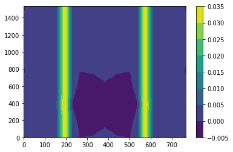
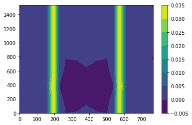

Contents
# Step 1: Install FFTW
!apt-get install libfftw3-dev
!apt-get install libfftw3-mpi-dev
# Step 2: Set paths for Dedalus installation
import os
os.environ['MPI_INCLUDE_PATH'] = "/usr/lib/x86_64-linux-gnu/openmpi/include"
os.environ['MPI_LIBRARY_PATH'] = "/usr/lib/x86_64-linux-gnu"
os.environ['FFTW_INCLUDE_PATH'] = "/usr/include"
os.environ['FFTW_LIBRARY_PATH'] = "/usr/lib/x86_64-linux-gnu"
# Step 3: Install Dedalus using pip
!pip3 install --no-cache http://github.com/dedalusproject/dedalus/zipball/d3/
/bin/bash: apt-get: command not found
/bin/bash: apt-get: command not found
Collecting http://github.com/dedalusproject/dedalus/zipball/d3/
Downloading http://github.com/dedalusproject/dedalus/zipball/d3/
- 10kB 30.0MB/s
\ 20kB 16.0MB/s
| 30kB 832kB/s
/ 40kB 1.1MB/s
- 51kB 1.4MB/s
\ 61kB 1.6MB/s
| 71kB 1.9MB/s
/ 81kB 2.2MB/s
- 92kB 2.4MB/s
\ 102kB 2.7MB/s
| 112kB 2.7MB/s
/ 122kB 2.7MB/s
- 133kB 2.0MB/s
\ 143kB 2.0MB/s
| 153kB 2.0MB/s
/ 163kB 2.0MB/s
- 174kB 2.0MB/s
\ 184kB 2.0MB/s
| 194kB 2.0MB/s
/ 204kB 2.0MB/s
- 215kB 2.0MB/s
\ 225kB 2.0MB/s
| 235kB 66.8MB/s
/ 245kB 63.9MB/s
- 256kB 64.7MB/s
\ 266kB 65.3MB/s
| 276kB 67.1MB/s
/ 286kB 66.6MB/s
- 296kB 69.7MB/s
\ 307kB 61.8MB/s
| 317kB 61.8MB/s
/ 327kB 62.2MB/s
- 337kB 64.5MB/s
\ 348kB 952kB/s
| 358kB 952kB/s
/ 368kB 952kB/s
- 378kB 952kB/s
\ 389kB 936kB/s
| 399kB 659kB/s
/ 409kB 659kB/s
- 419kB 659kB/s
\ 430kB 659kB/s
| 440kB 659kB/s
/ 450kB 2.1MB/s
- 460kB 2.1MB/s
\ 471kB 2.1MB/s
| 481kB 1.8MB/s
/ 491kB 1.8MB/s
- 501kB 10.0MB/s
\ 512kB 10.2MB/s
| 522kB 1.9MB/s
/ 532kB 1.9MB/s
- 542kB 1.1MB/s
\ 552kB 1.1MB/s
| 563kB 1.1MB/s
/ 573kB 1.1MB/s
- 583kB 1.2MB/s
\ 593kB 1.2MB/s
| 604kB 1.2MB/s
/ 614kB 1.2MB/s
- 624kB 2.3MB/s
\ 634kB 2.3MB/s
| 645kB 62.8MB/s
/ 655kB 68.3MB/s
- 665kB 67.0MB/s
\ 675kB 66.1MB/s
| 686kB 2.4MB/s
/ 696kB 2.3MB/s
- 706kB 2.4MB/s
\ 716kB 2.4MB/s
| 727kB 2.3MB/s
/ 737kB 2.3MB/s
- 747kB 2.3MB/s
\ 757kB 2.3MB/s
| 768kB 1.2MB/s
/ 778kB 1.1MB/s
- 788kB 488kB/s
\ 798kB 487kB/s
| 808kB 487kB/s
/ 819kB 487kB/s
- 829kB 487kB/s
\ 839kB 486kB/s
| 849kB 326kB/s
/ 860kB 326kB/s
- 870kB 308kB/s
\ 880kB 310kB/s
| 890kB 606kB/s
/ 901kB 608kB/s
- 911kB 590kB/s
\ 921kB 461kB/s
| 931kB 461kB/s
/ 942kB 461kB/s
- 952kB 508kB/s
\ 962kB 508kB/s
| 972kB 739kB/s
/ 983kB 575kB/s
- 993kB 575kB/s
\ 1.0MB 570kB/s
| 1.0MB 485kB/s
/ 1.0MB 624kB/s
- 1.0MB 508kB/s
\ 1.0MB 508kB/s
| 1.1MB 753kB/s
/ 1.1MB 753kB/s
- 1.1MB 642kB/s
\ 1.1MB 747kB/s
| 1.1MB 746kB/s
/ 1.1MB 631kB/s
- 1.1MB 740kB/s
\ 1.1MB 626kB/s
| 1.1MB 815kB/s
/ 1.1MB 731kB/s
- 1.2MB 628kB/s
\ 1.2MB 630kB/s
| 1.2MB 738kB/s
/ 1.2MB 842kB/s
- 1.2MB 787kB/s
\ 1.2MB 760kB/s
| 1.2MB 839kB/s
/ 1.2MB 989kB/s
- 1.2MB 765kB/s
\ 1.2MB 858kB/s
| 1.3MB 1.0MB/s
/ 1.3MB 835kB/s
- 1.3MB 833kB/s
\ 1.3MB 832kB/s
| 1.3MB 721kB/s
/ 1.3MB 548kB/s
- 1.3MB 547kB/s
\ 1.3MB 508kB/s
| 1.3MB 597kB/s
/ 1.4MB 597kB/s
- 1.4MB 676kB/s
\ 1.4MB 469kB/s
| 1.4MB 469kB/s
/ 1.4MB 470kB/s
- 1.4MB 538kB/s
\ 1.4MB 545kB/s
| 1.4MB 545kB/s
/ 1.4MB 618kB/s
- 1.4MB 621kB/s
\ 1.5MB 459kB/s
| 1.5MB 459kB/s
/ 1.5MB 768kB/s
- 1.5MB 521kB/s
\ 1.5MB 510kB/s
| 1.5MB 509kB/s
/ 1.5MB 806kB/s
- 1.5MB 807kB/s
\ 1.5MB 539kB/s
| 1.5MB 538kB/s
/ 1.6MB 741kB/s
- 1.6MB 558kB/s
\ 1.6MB 558kB/s
| 1.6MB 852kB/s
/ 1.6MB 883kB/s
- 1.6MB 884kB/s
\ 1.6MB 466kB/s
| 1.6MB 394kB/s
/ 1.6MB 519kB/s
- 1.6MB 520kB/s
\ 1.7MB 537kB/s
| 1.7MB 702kB/s
/ 1.7MB 693kB/s
- 1.7MB 692kB/s
\ 1.7MB 548kB/s
| 1.7MB 455kB/s
/ 1.7MB 843kB/s
- 1.7MB 1.3MB/s
\ 1.7MB 1.2MB/s
| 1.8MB 846kB/s
/ 1.8MB 844kB/s
- 1.8MB 798kB/s
\ 1.8MB 594kB/s
| 1.8MB 593kB/s
/ 1.8MB 766kB/s
- 1.8MB 1.1MB/s
\ 1.8MB 1.1MB/s
| 1.8MB 515kB/s
/ 1.8MB 447kB/s
- 1.9MB 536kB/s
\ 1.9MB 446kB/s
| 1.9MB 461kB/s
/ 1.9MB 315kB/s
- 1.9MB 315kB/s
\ 1.9MB 315kB/s
| 1.9MB 281kB/s
/ 1.9MB 278kB/s
- 1.9MB 386kB/s
\ 1.9MB 440kB/s
| 2.0MB 380kB/s
/ 2.0MB 425kB/s
- 2.0MB 424kB/s
\ 2.0MB 808kB/s
| 2.0MB 779kB/s
/ 2.0MB 779kB/s
- 2.0MB 1.1MB/s
\ 2.0MB 762kB/s
| 2.0MB 762kB/s
/ 2.0MB 759kB/s
- 2.1MB 740kB/s
\ 2.1MB 801kB/s
| 2.1MB 798kB/s
/ 2.1MB 1.1MB/s
- 2.1MB 803kB/s
\ 2.1MB 788kB/s
| 2.1MB 788kB/s
/ 2.1MB 985kB/s
- 2.1MB 836kB/s
\ 2.2MB 839kB/s
| 2.2MB 1.2MB/s
/ 2.2MB 1.0MB/s
- 2.2MB 814kB/s
\ 2.2MB 814kB/s
| 2.2MB 1.0MB/s
/ 2.2MB 812kB/s
- 2.2MB 812kB/s
\ 2.2MB 971kB/s
| 2.2MB 1.2MB/s
/ 2.3MB 1.2MB/s
- 2.3MB 1.0MB/s
\ 2.3MB 897kB/s
| 2.3MB 1.2MB/s
/ 2.3MB 1.1MB/s
- 2.3MB 1.3MB/s
\ 2.3MB 992kB/s
| 2.3MB 991kB/s
/ 2.3MB 990kB/s
- 2.3MB 711kB/s
\ 2.4MB 711kB/s
| 2.4MB 783kB/s
/ 2.4MB 1.0MB/s
- 2.4MB 994kB/s
\ 2.4MB 686kB/s
| 2.4MB 686kB/s
/ 2.4MB 1.0MB/s
- 2.4MB 738kB/s
\ 2.4MB 737kB/s
| 2.4MB 1.1MB/s
/ 2.5MB 1.0MB/s
- 2.5MB 969kB/s
\ 2.5MB 967kB/s
| 2.5MB 667kB/s
/ 2.5MB 992kB/s
- 2.5MB 993kB/s
\ 2.5MB 994kB/s
| 2.5MB 1.6MB/s
/ 2.5MB 930kB/s
- 2.5MB 930kB/s
\ 2.6MB 938kB/s
| 2.6MB 818kB/s
/ 2.6MB 819kB/s
- 2.6MB 1.4MB/s
\ 2.6MB 1.0MB/s
| 2.6MB 1.0MB/s
/ 2.6MB 1.0MB/s
- 2.6MB 737kB/s
\ 2.6MB 1.1MB/s
| 2.7MB 1.1MB/s
/ 2.7MB 1.1MB/s
- 2.7MB 1.4MB/s
\ 2.7MB 949kB/s
| 2.7MB 946kB/s
/ 2.7MB 1.2MB/s
- 2.7MB 1.0MB/s
\ 2.7MB 1.0MB/s
| 2.7MB 1.6MB/s
/ 2.7MB 928kB/s
- 2.8MB 928kB/s
\ 2.8MB 928kB/s
| 2.8MB 452kB/s
/ 2.8MB 540kB/s
- 2.8MB 540kB/s
\ 2.8MB 548kB/s
| 2.8MB 386kB/s
/ 2.8MB 386kB/s
- 2.8MB 386kB/s
\ 2.8MB 377kB/s
| 2.9MB 377kB/s
/ 2.9MB 377kB/s
- 2.9MB 671kB/s
\ 2.9MB 672kB/s
| 2.9MB 530kB/s
/ 2.9MB 529kB/s
- 2.9MB 1.0MB/s
\ 2.9MB 994kB/s
| 2.9MB 992kB/s
/ 2.9MB 2.1MB/s
- 3.0MB 766kB/s
\ 3.0MB 764kB/s
| 3.0MB 764kB/s
/ 3.0MB 763kB/s
- 3.0MB 1.1MB/s
\ 3.0MB 1.1MB/s
| 3.0MB 1.1MB/s
/ 3.0MB 816kB/s
- 3.0MB 813kB/s
\ 3.1MB 812kB/s
| 3.1MB 1.2MB/s
/ 3.1MB 1.2MB/s
- 3.1MB 1.2MB/s
\ 3.1MB 1.2MB/s
| 3.1MB 1.2MB/s
/ 3.1MB 1.1MB/s
- 3.1MB 764kB/s
\ 3.1MB 1.1MB/s
| 3.1MB 1.0MB/s
/ 3.2MB 765kB/s
- 3.2MB 1.2MB/s
\ 3.2MB 1.2MB/s
| 3.2MB 1.2MB/s
/ 3.2MB 734kB/s
- 3.2MB 734kB/s
\ 3.2MB 800kB/s
| 3.2MB 1.1MB/s
/ 3.2MB 1.1MB/s
- 3.2MB 1.2MB/s
\ 3.3MB 1.1MB/s
| 3.3MB 1.0MB/s
/ 3.3MB 1.0MB/s
- 3.3MB 726kB/s
\ 3.3MB 1.1MB/s
| 3.3MB 1.1MB/s
/ 3.3MB 1.1MB/s
- 3.3MB 1.1MB/s
\ 3.3MB 745kB/s
| 3.3MB 743kB/s
/ 3.4MB 1.1MB/s
- 3.4MB 778kB/s
\ 3.4MB 778kB/s
| 3.4MB 1.1MB/s
/ 3.4MB 1.1MB/s
- 3.4MB 1.1MB/s
\ 3.4MB 1.1MB/s
| 3.4MB 571kB/s
/ 3.4MB 748kB/s
- 3.5MB 750kB/s
\ 3.5MB 751kB/s
| 3.5MB 751kB/s
/ 3.5MB 747kB/s
- 3.5MB 747kB/s
\ 3.5MB 740kB/s
| 3.5MB 751kB/s
/ 3.5MB 578kB/s
- 3.5MB 1.2MB/s
\ 3.5MB 1.1MB/s
| 3.6MB 832kB/s
/ 3.6MB 831kB/s
- 3.6MB 1.0MB/s
\ 3.6MB 1.0MB/s
| 3.6MB 1.0MB/s
/ 3.6MB 1.1MB/s
- 3.6MB 820kB/s
\ 3.6MB 838kB/s
| 3.6MB 838kB/s
/ 3.6MB 890kB/s
- 3.7MB 1.2MB/s
\ 3.7MB 1.2MB/s
| 3.7MB 1.5MB/s
/ 3.7MB 953kB/s
- 3.7MB 901kB/s
\ 3.7MB 899kB/s
| 3.7MB 1.2MB/s
/ 3.7MB 2.1MB/s
- 3.7MB 1.2MB/s
\ 3.7MB 1.2MB/s
| 3.8MB 1.2MB/s
/ 3.8MB 848kB/s
- 3.8MB 847kB/s
\ 3.8MB 1.2MB/s
| 3.8MB 1.3MB/s
/ 3.8MB 1.3MB/s
- 3.8MB 1.3MB/s
\ 3.8MB 849kB/s
| 3.8MB 1.2MB/s
/ 3.9MB 1.2MB/s
- 3.9MB 998kB/s
\ 3.9MB 1.2MB/s
| 3.9MB 1.2MB/s
/ 3.9MB 1.2MB/s
- 3.9MB 1.3MB/s
\ 3.9MB 1.0MB/s
| 3.9MB 1.0MB/s
/ 3.9MB 1.6MB/s
- 3.9MB 1.3MB/s
\ 4.0MB 1.3MB/s
| 4.0MB 1.8MB/s
/ 4.0MB 2.5MB/s
- 4.0MB 1.5MB/s
\ 4.0MB 1.3MB/s
| 4.0MB 1.3MB/s
/ 4.0MB 1.7MB/s
- 4.0MB 1.2MB/s
\ 4.0MB 1.2MB/s
| 4.0MB 1.5MB/s
/ 4.1MB 1.2MB/s
- 4.1MB 1.1MB/s
\ 4.1MB 1.1MB/s
| 4.1MB 1.3MB/s
/ 4.1MB 1.2MB/s
- 4.1MB 1.2MB/s
\ 4.1MB 1.2MB/s
| 4.1MB 1.6MB/s
/ 4.1MB 1.3MB/s
- 4.1MB 1.3MB/s
\ 4.2MB 1.6MB/s
| 4.2MB 1.2MB/s
/ 4.2MB 1.2MB/s
- 4.2MB 1.4MB/s
\ 4.2MB 1.9MB/s
| 4.2MB 1.4MB/s
/ 4.2MB 1.3MB/s
- 4.2MB 1.4MB/s
\ 4.2MB 1.5MB/s
| 4.2MB 1.0MB/s
/ 4.3MB 1.0MB/s
- 4.3MB 1.5MB/s
\ 4.3MB 1.4MB/s
| 4.3MB 1.4MB/s
/ 4.3MB 1.4MB/s
- 4.3MB 1.1MB/s
\ 4.3MB 1.1MB/s
| 4.3MB 1.1MB/s
/ 4.3MB 1.3MB/s
- 4.4MB 2.0MB/s
\ 4.4MB 1.2MB/s
| 4.4MB 1.2MB/s
/ 4.4MB 1.2MB/s
- 4.4MB 1.2MB/s
\ 4.4MB 1.1MB/s
| 4.4MB 2.1MB/s
/ 4.4MB 2.1MB/s
- 4.4MB 1.3MB/s
\ 4.4MB 720kB/s
| 4.5MB 728kB/s
/ 4.5MB 994kB/s
- 4.5MB 995kB/s
\ 4.5MB 994kB/s
| 4.5MB 1.0MB/s
/ 4.5MB 1.1MB/s
- 4.5MB 777kB/s
\ 4.5MB 775kB/s
| 4.5MB 928kB/s
/ 4.5MB 1.3MB/s
- 4.6MB 1.3MB/s
\ 4.6MB 1.3MB/s
| 4.6MB 1.1MB/s
/ 4.6MB 1.1MB/s
- 4.6MB 1.1MB/s
\ 4.6MB 1.1MB/s
| 4.6MB 1.2MB/s
/ 4.6MB 1.0MB/s
- 4.6MB 1.2MB/s
\ 4.6MB 1.8MB/s
| 4.7MB 1.2MB/s
/ 4.7MB 1.1MB/s
- 4.7MB 1.2MB/s
\ 4.7MB 1.0MB/s
| 4.7MB 898kB/s
/ 4.7MB 897kB/s
- 4.7MB 1.1MB/s
\ 4.7MB 1.2MB/s
| 4.7MB 848kB/s
/ 4.8MB 847kB/s
- 4.8MB 999kB/s
\ 4.8MB 1.0MB/s
| 4.8MB 1.0MB/s
/ 4.8MB 1.3MB/s
- 4.8MB 1.1MB/s
\ 4.8MB 1.1MB/s
| 4.8MB 989kB/s
/ 4.8MB 754kB/s
- 4.8MB 1.0MB/s
\ 4.9MB 987kB/s
| 4.9MB 1.1MB/s
/ 4.9MB 1.2MB/s
- 4.9MB 793kB/s
\ 4.9MB 792kB/s
| 4.9MB 968kB/s
/ 4.9MB 924kB/s
- 4.9MB 1.0MB/s
\ 4.9MB 1.7MB/s
| 4.9MB 1.2MB/s
/ 5.0MB 1.1MB/s
- 5.0MB 1.1MB/s
\ 5.0MB 1.0MB/s
| 5.0MB 995kB/s
/ 5.0MB 995kB/s
- 5.0MB 1.1MB/s
\ 5.0MB 1.1MB/s
| 5.0MB 1.1MB/s
/ 5.0MB 650kB/s
- 5.0MB 792kB/s
\ 5.1MB 840kB/s
| 5.1MB 840kB/s
/ 5.1MB 902kB/s
- 5.1MB 1.3MB/s
\ 5.1MB 1.2MB/s
| 5.1MB 1.2MB/s
/ 5.1MB 848kB/s
- 5.1MB 805kB/s
\ 5.1MB 1.6MB/s
| 5.2MB 1.6MB/s
/ 5.2MB 1.1MB/s
- 5.2MB 972kB/s
\ 5.2MB 970kB/s
| 5.2MB 837kB/s
/ 5.2MB 781kB/s
- 5.2MB 780kB/s
\ 5.2MB 1.1MB/s
| 5.2MB 887kB/s
/ 5.2MB 886kB/s
- 5.3MB 834kB/s
\ 5.3MB 843kB/s
| 5.3MB 915kB/s
/ 5.3MB 846kB/s
- 5.3MB 1.1MB/s
\ 5.3MB 957kB/s
| 5.3MB 903kB/s
/ 5.3MB 902kB/s
- 5.3MB 834kB/s
\ 5.3MB 801kB/s
| 5.4MB 848kB/s
/ 5.4MB 1.2MB/s
- 5.4MB 1.0MB/s
\ 5.4MB 895kB/s
| 5.4MB 896kB/s
/ 5.4MB 969kB/s
- 5.4MB 849kB/s
\ 5.4MB 843kB/s
| 5.4MB 1.2MB/s
/ 5.4MB 1.3MB/s
- 5.5MB 1.1MB/s
\ 5.5MB 867kB/s
| 5.5MB 977kB/s
/ 5.5MB 1.2MB/s
- 5.5MB 841kB/s
\ 5.5MB 992kB/s
| 5.5MB 1.3MB/s
/ 5.5MB 1.2MB/s
- 5.5MB 933kB/s
\ 5.6MB 933kB/s
| 5.6MB 917kB/s
/ 5.6MB 940kB/s
- 5.6MB 941kB/s
\ 5.6MB 950kB/s
| 5.6MB 1.2MB/s
/ 5.6MB 1.2MB/s
- 5.6MB 1.2MB/s
\ 5.6MB 850kB/s
| 5.6MB 1.0MB/s
/ 5.7MB 1.0MB/s
- 5.7MB 1.3MB/s
\ 5.7MB 1.0MB/s
| 5.7MB 1.0MB/s
/ 5.7MB 1.0MB/s
- 5.7MB 1.0MB/s
\ 5.7MB 846kB/s
| 5.7MB 845kB/s
/ 5.7MB 1.2MB/s
- 5.7MB 1.1MB/s
\ 5.8MB 822kB/s
| 5.8MB 820kB/s
/ 5.8MB 1.2MB/s
- 5.8MB 1.1MB/s
\ 5.8MB 1.1MB/s
| 5.8MB 1.4MB/s
/ 5.8MB 1.2MB/s
- 5.8MB 1.1MB/s
\ 5.8MB 1.1MB/s
| 5.8MB 1.2MB/s
/ 5.9MB 1.3MB/s
- 5.9MB 1.3MB/s
\ 5.9MB 1.3MB/s
| 5.9MB 1.2MB/s
/ 5.9MB 1.2MB/s
- 5.9MB 1.2MB/s
\ 5.9MB 1.0MB/s
| 5.9MB 1.1MB/s
/ 5.9MB 1.1MB/s
- 5.9MB 1.2MB/s
\ 6.0MB 1.3MB/s
| 6.0MB 1.0MB/s
/ 6.0MB 1.0MB/s
- 6.0MB 1.2MB/s
\ 6.0MB 934kB/s
| 6.0MB 930kB/s
/ 6.0MB 1.6MB/s
- 6.0MB 1.3MB/s
\ 6.0MB 1.2MB/s
| 6.1MB 1.2MB/s
/ 6.1MB 1.0MB/s
- 6.1MB 1.3MB/s
\ 6.1MB 1.3MB/s
| 6.1MB 1.3MB/s
/ 6.1MB 1.6MB/s
- 6.1MB 1.1MB/s
\ 6.1MB 1.1MB/s
| 6.1MB 1.2MB/s
/ 6.1MB 1.1MB/s
- 6.2MB 1.1MB/s
\ 6.2MB 1.8MB/s
| 6.2MB 1.2MB/s
/ 6.2MB 1.2MB/s
- 6.2MB 1.2MB/s
\ 6.2MB 1.2MB/s
| 6.2MB 841kB/s
/ 6.2MB 842kB/s
- 6.2MB 914kB/s
\ 6.2MB 775kB/s
| 6.3MB 773kB/s
/ 6.3MB 773kB/s
- 6.3MB 767kB/s
\ 6.3MB 771kB/s
| 6.3MB 753kB/s
/ 6.3MB 786kB/s
- 6.3MB 1.5MB/s
\ 6.3MB 643kB/s
| 6.3MB 641kB/s
/ 6.3MB 767kB/s
- 6.4MB 767kB/s
\ 6.4MB 767kB/s
| 6.4MB 1.0MB/s
/ 6.4MB 721kB/s
- 6.4MB 729kB/s
\ 6.4MB 729kB/s
| 6.4MB 734kB/s
/ 6.4MB 705kB/s
- 6.4MB 706kB/s
\ 6.5MB 707kB/s
| 6.5MB 708kB/s
/ 6.5MB 540kB/s
- 6.5MB 539kB/s
\ 6.5MB 650kB/s
| 6.5MB 656kB/s
/ 6.5MB 531kB/s
- 6.5MB 532kB/s
\ 6.5MB 1.0MB/s
| 6.5MB 1.0MB/s
/ 6.6MB 1.0MB/s
- 6.6MB 682kB/s
\ 6.6MB 971kB/s
| 6.6MB 972kB/s
/ 6.6MB 1.1MB/s
- 6.6MB 793kB/s
\ 6.6MB 1.1MB/s
| 6.6MB 1.1MB/s
/ 6.6MB 791kB/s
- 6.6MB 795kB/s
\ 6.7MB 795kB/s
| 6.7MB 1.3MB/s
/ 6.7MB 1.3MB/s
- 6.7MB 852kB/s
\ 6.7MB 851kB/s
| 6.7MB 1.2MB/s
/ 6.7MB 1.2MB/s
- 6.7MB 810kB/s
\ 6.7MB 1.2MB/s
| 6.7MB 1.2MB/s
/ 6.8MB 1.2MB/s
- 6.8MB 1.2MB/s
\ 6.8MB 800kB/s
| 6.8MB 1.1MB/s
/ 6.8MB 1.1MB/s
- 6.8MB 1.2MB/s
\ 6.8MB 797kB/s
| 6.8MB 1.2MB/s
/ 6.8MB 1.2MB/s
- 6.9MB 1.2MB/s
\ 6.9MB 662kB/s
| 6.9MB 661kB/s
/ 6.9MB 927kB/s
- 6.9MB 928kB/s
\ 6.9MB 912kB/s
| 6.9MB 911kB/s
/ 6.9MB 1.4MB/s
- 6.9MB 685kB/s
\ 6.9MB 683kB/s
| 7.0MB 690kB/s
/ 7.0MB 1.3MB/s
- 7.0MB 585kB/s
\ 7.0MB 583kB/s
| 7.0MB 584kB/s
/ 7.0MB 589kB/s
- 7.0MB 589kB/s
\ 7.0MB 589kB/s
| 7.0MB 1.1MB/s
/ 7.0MB 735kB/s
- 7.1MB 734kB/s
\ 7.1MB 734kB/s
| 7.1MB 1.0MB/s
/ 7.1MB 1.0MB/s
- 7.1MB 1.0MB/s
\ 7.1MB 1.0MB/s
| 7.1MB 675kB/s
/ 7.1MB 675kB/s
- 7.1MB 675kB/s
\ 7.1MB 945kB/s
| 7.2MB 624kB/s
/ 7.2MB 499kB/s
- 7.2MB 683kB/s
\ 7.2MB 685kB/s
| 7.2MB 677kB/s
/ 7.2MB 456kB/s
- 7.2MB 589kB/s
\ 7.2MB 576kB/s
| 7.2MB 515kB/s
/ 7.2MB 510kB/s
- 7.3MB 708kB/s
\ 7.3MB 972kB/s
| 7.3MB 763kB/s
/ 7.3MB 762kB/s
- 7.3MB 665kB/s
\ 7.3MB 1.3MB/s
| 7.3MB 1.3MB/s
/ 7.3MB 1.3MB/s
- 7.3MB 1.1MB/s
\ 7.4MB 1.1MB/s
| 7.4MB 1.1MB/s
/ 7.4MB 1.1MB/s
- 7.4MB 1.2MB/s
\ 7.4MB 1.0MB/s
| 7.4MB 1.3MB/s
/ 7.4MB 1.3MB/s
- 7.4MB 982kB/s
\ 7.4MB 849kB/s
| 7.4MB 1.3MB/s
/ 7.5MB 951kB/s
- 7.5MB 685kB/s
\ 7.5MB 685kB/s
| 7.5MB 818kB/s
/ 7.5MB 833kB/s
- 7.5MB 833kB/s
\ 7.5MB 833kB/s
| 7.5MB 742kB/s
/ 7.5MB 830kB/s
- 7.5MB 831kB/s
\ 7.6MB 1.1MB/s
| 7.6MB 411kB/s
/ 7.6MB 411kB/s
- 7.6MB 411kB/s
\ 7.6MB 427kB/s
| 7.6MB 313kB/s
/ 7.6MB 313kB/s
- 7.6MB 356kB/s
\ 7.6MB 356kB/s
| 7.6MB 313kB/s
/ 7.7MB 313kB/s
- 7.7MB 770kB/s
\ 7.7MB 677kB/s
| 7.7MB 677kB/s
/ 7.7MB 690kB/s
- 7.7MB 1.7MB/s
\ 7.7MB 1.1MB/s
| 7.7MB 834kB/s
/ 7.7MB 844kB/s
- 7.8MB 1.2MB/s
\ 7.8MB 856kB/s
| 7.8MB 855kB/s
/ 7.8MB 1.0MB/s
- 7.8MB 967kB/s
\ 7.8MB 818kB/s
| 7.8MB 817kB/s
/ 7.8MB 884kB/s
- 7.8MB 997kB/s
\ 7.8MB 996kB/s
| 7.9MB 1.0MB/s
/ 7.9MB 1.1MB/s
- 7.9MB 1.1MB/s
\ 7.9MB 1.1MB/s
| 7.9MB 1.0MB/s
/ 7.9MB 1.3MB/s
- 7.9MB 849kB/s
\ 7.9MB 1.0MB/s
| 7.9MB 1.2MB/s
/ 7.9MB 1.2MB/s
- 8.0MB 1.2MB/s
\ 8.0MB 1.1MB/s
| 8.0MB 1.1MB/s
/ 8.0MB 1.1MB/s
- 8.0MB 1.2MB/s
\ 8.0MB 649kB/s
| 8.0MB 859kB/s
/ 8.0MB 860kB/s
- 8.0MB 612kB/s
\ 8.0MB 610kB/s
| 8.1MB 610kB/s
/ 8.1MB 791kB/s
- 8.1MB 794kB/s
\ 8.1MB 794kB/s
| 8.1MB 595kB/s
/ 8.1MB 1.1MB/s
- 8.1MB 1.1MB/s
\ 8.1MB 1.1MB/s
| 8.1MB 2.2MB/s
/ 8.2MB 854kB/s
- 8.2MB 852kB/s
\ 8.2MB 851kB/s
| 8.2MB 853kB/s
/ 8.2MB 745kB/s
- 8.2MB 1.1MB/s
\ 8.2MB 1.1MB/s
| 8.2MB 889kB/s
/ 8.2MB 712kB/s
- 8.2MB 712kB/s
\ 8.3MB 1.3MB/s
| 8.3MB 858kB/s
/ 8.3MB 856kB/s
- 8.3MB 859kB/s
\ 8.3MB 978kB/s
| 8.3MB 978kB/s
/ 8.3MB 715kB/s
- 8.3MB 841kB/s
\ 8.3MB 1.1MB/s
| 8.3MB 771kB/s
/ 8.4MB 838kB/s
- 8.4MB 1.2MB/s
\ 8.4MB 837kB/s
| 8.4MB 835kB/s
/ 8.4MB 855kB/s
- 8.4MB 834kB/s
\ 8.4MB 1.2MB/s
| 8.4MB 1.2MB/s
/ 8.4MB 823kB/s
- 8.4MB 1.2MB/s
\ 8.5MB 1.2MB/s
| 8.5MB 837kB/s
/ 8.5MB 1.2MB/s
- 8.5MB 1.2MB/s
\ 8.5MB 1.2MB/s
| 8.5MB 807kB/s
/ 8.5MB 710kB/s
- 8.5MB 710kB/s
\ 8.5MB 987kB/s
| 8.6MB 717kB/s
/ 8.6MB 716kB/s
- 8.6MB 969kB/s
\ 8.6MB 950kB/s
| 8.6MB 687kB/s
/ 8.6MB 686kB/s
- 8.6MB 892kB/s
\ 8.6MB 812kB/s
| 8.6MB 811kB/s
/ 8.6MB 815kB/s
- 8.7MB 1.0MB/s
\ 8.7MB 1.0MB/s
| 8.7MB 1.0MB/s
/ 8.7MB 783kB/s
- 8.7MB 1.1MB/s
\ 8.7MB 1.1MB/s
| 8.7MB 1.2MB/s
/ 8.7MB 1.1MB/s
- 8.7MB 1.1MB/s
\ 8.7MB 1.1MB/s
| 8.8MB 1.2MB/s
/ 8.8MB 786kB/s
- 8.8MB 785kB/s
\ 8.8MB 1.1MB/s
| 8.8MB 1.1MB/s
/ 8.8MB 1.1MB/s
- 8.8MB 1.1MB/s
\ 8.8MB 1.2MB/s
| 8.8MB 978kB/s
/ 8.8MB 978kB/s
- 8.9MB 983kB/s
\ 8.9MB 1.3MB/s
| 8.9MB 1.1MB/s
/ 8.9MB 1.1MB/s
- 8.9MB 1.1MB/s
\ 8.9MB 791kB/s
| 8.9MB 790kB/s
/ 8.9MB 1.1MB/s
- 8.9MB 1.3MB/s
\ 8.9MB 1.3MB/s
| 9.0MB 1.3MB/s
/ 9.0MB 849kB/s
- 9.0MB 1.0MB/s
\ 9.0MB 1.0MB/s
| 9.0MB 1.0MB/s
/ 9.0MB 714kB/s
- 9.0MB 715kB/s
\ 9.0MB 715kB/s
| 9.0MB 710kB/s
/ 9.1MB 532kB/s
- 9.1MB 532kB/s
\ 9.1MB 759kB/s
| 9.1MB 763kB/s
/ 9.1MB 762kB/s
- 9.1MB 762kB/s
\ 9.1MB 1.1MB/s
| 9.1MB 961kB/s
/ 9.1MB 961kB/s
- 9.1MB 971kB/s
\ 9.2MB 1.8MB/s
| 9.2MB 1.3MB/s
/ 9.2MB 1.3MB/s
- 9.2MB 1.0MB/s
\ 9.2MB 955kB/s
| 9.2MB 954kB/s
/ 9.2MB 1.5MB/s
- 9.2MB 1.3MB/s
\ 9.2MB 1.1MB/s
| 9.2MB 1.1MB/s
/ 9.3MB 1.1MB/s
- 9.3MB 1.1MB/s
\ 9.3MB 1.1MB/s
| 9.3MB 1.4MB/s
/ 9.3MB 1.2MB/s
- 9.3MB 1.2MB/s
\ 9.3MB 1.2MB/s
| 9.3MB 1.2MB/s
/ 9.3MB 1.6MB/s
- 9.3MB 1.2MB/s
\ 9.4MB 1.2MB/s
| 9.4MB 1.6MB/s
/ 9.4MB 1.2MB/s
- 9.4MB 1.2MB/s
\ 9.4MB 1.2MB/s
| 9.4MB 1.2MB/s
/ 9.4MB 1.2MB/s
- 9.4MB 1.6MB/s
\ 9.4MB 1.2MB/s
| 9.5MB 1.2MB/s
/ 9.5MB 1.2MB/s
- 9.5MB 1.2MB/s
\ 9.5MB 1.0MB/s
| 9.5MB 1.0MB/s
/ 9.5MB 1.3MB/s
- 9.5MB 1.1MB/s
\ 9.5MB 1.1MB/s
| 9.5MB 1.1MB/s
/ 9.5MB 1.1MB/s
- 9.6MB 1.3MB/s
\ 9.6MB 1.1MB/s
| 9.6MB 1.1MB/s
/ 9.6MB 1.8MB/s
- 9.6MB 1.8MB/s
\ 9.6MB 1.8MB/s
| 9.6MB 1.6MB/s
/ 9.6MB 1.2MB/s
- 9.6MB 1.2MB/s
\ 9.6MB 1.7MB/s
| 9.7MB 1.7MB/s
/ 9.7MB 1.2MB/s
- 9.7MB 1.2MB/s
\ 9.7MB 952kB/s
| 9.7MB 918kB/s
/ 9.7MB 918kB/s
- 9.7MB 1.2MB/s
\ 9.7MB 1.2MB/s
| 9.7MB 1.0MB/s
/ 9.7MB 1.0MB/s
- 9.8MB 935kB/s
\ 9.8MB 1.4MB/s
| 9.8MB 1.2MB/s
/ 9.8MB 1.6MB/s
- 9.8MB 1.7MB/s
\ 9.8MB 1.2MB/s
| 9.8MB 1.2MB/s
/ 9.8MB 1.3MB/s
- 9.8MB 1.2MB/s
\ 9.9MB 1.2MB/s
| 9.9MB 1.3MB/s
/ 9.9MB 683kB/s
- 9.9MB 763kB/s
\ 9.9MB 763kB/s
| 9.9MB 772kB/s
/ 9.9MB 922kB/s
- 9.9MB 923kB/s
\ 9.9MB 1.1MB/s
| 9.9MB 1.0MB/s
/ 10.0MB 858kB/s
- 10.0MB 856kB/s
\ 10.0MB 2.2MB/s
| 10.0MB 2.2MB/s
/ 10.0MB 1.5MB/s
- 10.0MB 1.5MB/s
\ 10.0MB 1.5MB/s
| 10.0MB 1.2MB/s
/ 10.0MB 952kB/s
- 10.0MB 1.3MB/s
\ 10.1MB 1.2MB/s
| 10.1MB 1.2MB/s
/ 10.1MB 1.2MB/s
- 10.1MB 1.2MB/s
\ 10.1MB 1.3MB/s
| 10.1MB 1.0MB/s
/ 10.1MB 1.0MB/s
- 10.1MB 1.2MB/s
\ 10.1MB 1.0MB/s
| 10.1MB 1.0MB/s
/ 10.2MB 1.3MB/s
- 10.2MB 1.2MB/s
\ 10.2MB 984kB/s
| 10.2MB 983kB/s
/ 10.2MB 1.2MB/s
- 10.2MB 1.3MB/s
\ 10.2MB 1.2MB/s
| 10.2MB 1.2MB/s
/ 10.2MB 2.0MB/s
- 10.3MB 1.6MB/s
\ 10.3MB 1.3MB/s
| 10.3MB 1.3MB/s
/ 10.3MB 1.4MB/s
- 10.3MB 1.1MB/s
\ 10.3MB 1.1MB/s
| 10.3MB 1.2MB/s
/ 10.3MB 455kB/s
- 10.3MB 466kB/s
\ 10.3MB 466kB/s
| 10.4MB 497kB/s
/ 10.4MB 445kB/s
- 10.4MB 445kB/s
\ 10.4MB 480kB/s
| 10.4MB 537kB/s
/ 10.4MB 483kB/s
- 10.4MB 482kB/s
\ 10.4MB 1.6MB/s
| 10.4MB 848kB/s
/ 10.4MB 847kB/s
- 10.5MB 847kB/s
\ 10.5MB 1.3MB/s
| 10.5MB 1.3MB/s
/ 10.5MB 991kB/s
- 10.5MB 994kB/s
\ 10.5MB 1.0MB/s
| 10.5MB 843kB/s
/ 10.5MB 840kB/s
- 10.5MB 1.6MB/s
\ 10.5MB 1.2MB/s
| 10.6MB 943kB/s
/ 10.6MB 941kB/s
- 10.6MB 825kB/s
\ 10.6MB 873kB/s
| 10.6MB 874kB/s
/ 10.6MB 1.0MB/s
- 10.6MB 1.0MB/s
\ 10.6MB 883kB/s
| 10.6MB 881kB/s
/ 10.6MB 1.0MB/s
- 10.7MB 972kB/s
\ 10.7MB 910kB/s
| 10.7MB 1.1MB/s
/ 10.7MB 1.3MB/s
- 10.7MB 763kB/s
\ 10.7MB 761kB/s
| 10.7MB 920kB/s
/ 10.7MB 733kB/s
- 10.7MB 731kB/s
\ 10.8MB 731kB/s
| 10.8MB 950kB/s
/ 10.8MB 728kB/s
- 10.8MB 715kB/s
\ 10.8MB 714kB/s
| 10.8MB 1.1MB/s
/ 10.8MB 766kB/s
- 10.8MB 764kB/s
\ 10.8MB 1.1MB/s
| 10.8MB 1.1MB/s
/ 10.9MB 1.1MB/s
- 10.9MB 781kB/s
\ 10.9MB 1.1MB/s
| 10.9MB 1.1MB/s
/ 10.9MB 797kB/s
- 10.9MB 811kB/s
\ 10.9MB 1.2MB/s
| 10.9MB 1.1MB/s
/ 10.9MB 1.1MB/s
- 10.9MB 841kB/s
\ 11.0MB 836kB/s
| 11.0MB 1.2MB/s
/ 11.0MB 1.3MB/s
- 11.0MB 865kB/s
\ 11.0MB 1.2MB/s
| 11.0MB 1.2MB/s
/ 11.0MB 1.1MB/s
- 11.0MB 777kB/s
\ 11.0MB 776kB/s
| 11.0MB 1.0MB/s
/ 11.1MB 1.1MB/s
- 11.1MB 1.1MB/s
\ 11.1MB 751kB/s
| 11.1MB 995kB/s
/ 11.1MB 998kB/s
- 11.1MB 741kB/s
\ 11.1MB 825kB/s
| 11.1MB 1.2MB/s
/ 11.1MB 1.2MB/s
- 11.2MB 1.2MB/s
\ 11.2MB 802kB/s
| 11.2MB 799kB/s
/ 11.2MB 1.1MB/s
- 11.2MB 1.2MB/s
\ 11.2MB 1.2MB/s
| 11.2MB 1.2MB/s
/ 11.2MB 1.2MB/s
- 11.2MB 1.2MB/s
\ 11.2MB 689kB/s
| 11.3MB 689kB/s
/ 11.3MB 960kB/s
- 11.3MB 963kB/s
\ 11.3MB 963kB/s
| 11.3MB 962kB/s
/ 11.3MB 730kB/s
- 11.3MB 1.0MB/s
\ 11.3MB 1.0MB/s
| 11.3MB 1.0MB/s
/ 11.3MB 1.5MB/s
- 11.4MB 1.2MB/s
\ 11.4MB 1.2MB/s
| 11.4MB 943kB/s
/ 11.4MB 758kB/s
- 11.4MB 757kB/s
\ 11.4MB 1.0MB/s
| 11.4MB 880kB/s
/ 11.4MB 734kB/s
- 11.4MB 733kB/s
\ 11.4MB 387kB/s
| 11.5MB 412kB/s
/ 11.5MB 412kB/s
- 11.5MB 456kB/s
\ 11.5MB 514kB/s
| 11.5MB 515kB/s
/ 11.5MB 420kB/s
- 11.5MB 449kB/s
\ 11.5MB 500kB/s
| 11.5MB 358kB/s
/ 11.6MB 793kB/s
- 11.6MB 794kB/s
\ 11.6MB 465kB/s
| 11.6MB 465kB/s
/ 11.6MB 466kB/s
- 11.6MB 466kB/s
\ 11.6MB 585kB/s
| 11.6MB 586kB/s
/ 11.6MB 439kB/s
- 11.6MB 674kB/s
\ 11.7MB 675kB/s
| 11.7MB 502kB/s
/ 11.7MB 906kB/s
- 11.7MB 908kB/s
\ 11.7MB 912kB/s
| 11.7MB 912kB/s
/ 11.7MB 912kB/s
- 11.7MB 644kB/s
\ 11.7MB 1.0MB/s
| 11.7MB 1.0MB/s
/ 11.8MB 499kB/s
- 11.8MB 667kB/s
\ 11.8MB 668kB/s
| 11.8MB 668kB/s
/ 11.8MB 667kB/s
- 11.8MB 668kB/s
\ 11.8MB 467kB/s
| 11.8MB 593kB/s
/ 11.8MB 593kB/s
- 11.8MB 595kB/s
\ 11.9MB 920kB/s
| 11.9MB 920kB/s
/ 11.9MB 919kB/s
- 11.9MB 659kB/s
\ 11.9MB 644kB/s
| 11.9MB 644kB/s
/ 11.9MB 1.1MB/s
- 11.9MB 729kB/s
\ 11.9MB 727kB/s
| 12.0MB 726kB/s
/ 12.0MB 721kB/s
- 12.0MB 719kB/s
\ 12.0MB 719kB/s
| 12.0MB 1.0MB/s
/ 12.0MB 701kB/s
- 12.0MB 693kB/s
\ 12.0MB 693kB/s
| 12.0MB 670kB/s
/ 12.0MB 671kB/s
- 12.1MB 671kB/s
\ 12.1MB 949kB/s
| 12.1MB 625kB/s
/ 12.1MB 620kB/s
- 12.1MB 620kB/s
\ 12.1MB 750kB/s
| 12.1MB 753kB/s
/ 12.1MB 752kB/s
- 12.1MB 1.2MB/s
\ 12.1MB 839kB/s
| 12.2MB 828kB/s
/ 12.2MB 827kB/s
- 12.2MB 941kB/s
\ 12.2MB 948kB/s
| 12.2MB 948kB/s
/ 12.2MB 1.2MB/s
- 12.2MB 832kB/s
\ 12.2MB 829kB/s
| 12.2MB 829kB/s
/ 12.2MB 793kB/s
- 12.3MB 801kB/s
\ 12.3MB 801kB/s
| 12.3MB 1.2MB/s
/ 12.3MB 830kB/s
- 12.3MB 647kB/s
\ 12.3MB 645kB/s
| 12.3MB 856kB/s
/ 12.3MB 859kB/s
- 12.3MB 630kB/s
\ 12.3MB 865kB/s
| 12.4MB 864kB/s
/ 12.4MB 645kB/s
- 12.4MB 644kB/s
\ 12.4MB 841kB/s
| 12.4MB 1.2MB/s
/ 12.4MB 1.2MB/s
- 12.4MB 1.2MB/s
\ 12.4MB 805kB/s
| 12.4MB 1.2MB/s
/ 12.5MB 1.2MB/s
- 12.5MB 835kB/s
\ 12.5MB 1.2MB/s
| 12.5MB 1.2MB/s
/ 12.5MB 1.2MB/s
- 12.5MB 1.1MB/s
\ 12.5MB 811kB/s
| 12.5MB 810kB/s
/ 12.5MB 1.1MB/s
- 12.5MB 1.1MB/s
\ 12.6MB 757kB/s
| 12.6MB 1.1MB/s
/ 12.6MB 1.1MB/s
- 12.6MB 1.0MB/s
\ 12.6MB 1.0MB/s
| 12.6MB 820kB/s
/ 12.6MB 1.1MB/s
- 12.6MB 1.1MB/s
\ 12.6MB 1.2MB/s
| 12.6MB 1.1MB/s
/ 12.7MB 1.2MB/s
- 12.7MB 1.2MB/s
\ 12.7MB 1.2MB/s
| 12.7MB 360kB/s
/ 12.7MB 360kB/s
- 12.7MB 414kB/s
\ 12.7MB 400kB/s
| 12.7MB 400kB/s
/ 12.7MB 400kB/s
- 12.7MB 346kB/s
\ 12.8MB 402kB/s
| 12.8MB 340kB/s
/ 12.8MB 341kB/s
- 12.8MB 1.0MB/s
\ 12.8MB 684kB/s
| 12.8MB 683kB/s
/ 12.8MB 728kB/s
- 12.8MB 558kB/s
\ 12.8MB 557kB/s
| 12.9MB 733kB/s
/ 12.9MB 732kB/s
- 12.9MB 773kB/s
\ 12.9MB 772kB/s
| 12.9MB 773kB/s
/ 12.9MB 827kB/s
- 12.9MB 827kB/s
\ 12.9MB 829kB/s
| 12.9MB 1.2MB/s
/ 12.9MB 855kB/s
- 13.0MB 854kB/s
\ 13.0MB 841kB/s
| 13.0MB 1.2MB/s
/ 13.0MB 1.2MB/s
- 13.0MB 1.2MB/s
\ 13.0MB 1.2MB/s
| 13.0MB 1.2MB/s
/ 13.0MB 1.2MB/s
- 13.0MB 827kB/s
\ 13.0MB 1.1MB/s
| 13.1MB 1.1MB/s
/ 13.1MB 1.2MB/s
- 13.1MB 548kB/s
\ 13.1MB 564kB/s
| 13.1MB 564kB/s
/ 13.1MB 640kB/s
- 13.1MB 564kB/s
\ 13.1MB 563kB/s
| 13.1MB 712kB/s
/ 13.1MB 727kB/s
- 13.2MB 572kB/s
\ 13.2MB 571kB/s
| 13.2MB 1.3MB/s
/ 13.2MB 1.3MB/s
- 13.2MB 850kB/s
\ 13.2MB 990kB/s
| 13.2MB 1.3MB/s
/ 13.2MB 1.2MB/s
- 13.2MB 1.0MB/s
\ 13.3MB 1.0MB/s
| 13.3MB 1.1MB/s
/ 13.3MB 1.1MB/s
- 13.3MB 1.1MB/s
\ 13.3MB 1.1MB/s
| 13.3MB 997kB/s
/ 13.3MB 996kB/s
- 13.3MB 995kB/s
\ 13.3MB 982kB/s
| 13.3MB 767kB/s
/ 13.4MB 766kB/s
- 13.4MB 983kB/s
\ 13.4MB 985kB/s
| 13.4MB 712kB/s
/ 13.4MB 710kB/s
- 13.4MB 1.1MB/s
\ 13.4MB 1.1MB/s
| 13.4MB 1.1MB/s
/ 13.4MB 1.2MB/s
- 13.4MB 2.4MB/s
\ 13.5MB 1.2MB/s
| 13.5MB 1.2MB/s
/ 13.5MB 1.2MB/s
- 13.5MB 864kB/s
\ 13.5MB 864kB/s
| 13.5MB 865kB/s
/ 13.5MB 867kB/s
- 13.5MB 866kB/s
\ 13.5MB 769kB/s
| 13.5MB 768kB/s
/ 13.6MB 811kB/s
- 13.6MB 807kB/s
\ 13.6MB 807kB/s
| 13.6MB 1.8MB/s
/ 13.6MB 1.1MB/s
- 13.6MB 1.1MB/s
\ 13.6MB 1.1MB/s
| 13.6MB 1.1MB/s
/ 13.6MB 825kB/s
- 13.6MB 648kB/s
\ 13.7MB 840kB/s
| 13.7MB 858kB/s
/ 13.7MB 806kB/s
- 13.7MB 643kB/s
\ 13.7MB 832kB/s
| 13.7MB 795kB/s
/ 13.7MB 647kB/s
- 13.7MB 646kB/s
\ 13.7MB 894kB/s
| 13.8MB 984kB/s
/ 13.8MB 849kB/s
- 13.8MB 848kB/s
\ 13.8MB 759kB/s
| 13.8MB 852kB/s
/ 13.8MB 852kB/s
- 13.8MB 921kB/s
\ 13.8MB 989kB/s
| 13.8MB 989kB/s
/ 13.8MB 973kB/s
- 13.9MB 811kB/s
\ 13.9MB 932kB/s
| 13.9MB 932kB/s
/ 13.9MB 1.2MB/s
- 13.9MB 895kB/s
\ 13.9MB 876kB/s
| 13.9MB 875kB/s
/ 13.9MB 768kB/s
- 13.9MB 765kB/s
\ 13.9MB 775kB/s
| 14.0MB 1.2MB/s
/ 14.0MB 776kB/s
- 14.0MB 775kB/s
\ 14.0MB 775kB/s
| 14.0MB 1.1MB/s
/ 14.0MB 773kB/s
- 14.0MB 771kB/s
\ 14.0MB 1.1MB/s
| 14.0MB 1.1MB/s
/ 14.0MB 1.1MB/s
- 14.1MB 774kB/s
\ 14.1MB 1.2MB/s
| 14.1MB 1.2MB/s
/ 14.1MB 798kB/s
- 14.1MB 825kB/s
\ 14.1MB 1.2MB/s
| 14.1MB 1.2MB/s
/ 14.1MB 1.2MB/s
- 14.1MB 848kB/s
\ 14.2MB 838kB/s
| 14.2MB 1.2MB/s
/ 14.2MB 1.2MB/s
- 14.2MB 837kB/s
\ 14.2MB 1.1MB/s
| 14.2MB 1.1MB/s
/ 14.2MB 1.1MB/s
- 14.2MB 826kB/s
\ 14.2MB 825kB/s
| 14.2MB 1.2MB/s
/ 14.3MB 1.1MB/s
- 14.3MB 1.1MB/s
\ 14.3MB 803kB/s
| 14.3MB 1.1MB/s
/ 14.3MB 1.3MB/s
- 14.3MB 1.1MB/s
\ 14.3MB 1.1MB/s
| 14.3MB 497kB/s
/ 14.3MB 497kB/s
- 14.3MB 498kB/s
\ 14.4MB 278kB/s
| 14.4MB 275kB/s
/ 14.4MB 306kB/s
- 14.4MB 307kB/s
\ 14.4MB 201kB/s
| 14.4MB 208kB/s
/ 14.4MB 208kB/s
- 14.4MB 295kB/s
\ 14.4MB 265kB/s
| 14.4MB 265kB/s
/ 14.5MB 467kB/s
- 14.5MB 470kB/s
\ 14.5MB 470kB/s
| 14.5MB 339kB/s
/ 14.5MB 804kB/s
- 14.5MB 805kB/s
\ 14.5MB 804kB/s
| 14.5MB 804kB/s
/ 14.5MB 1.2MB/s
- 14.6MB 1.2MB/s
\ 14.6MB 1.2MB/s
| 14.6MB 824kB/s
/ 14.6MB 808kB/s
- 14.6MB 2.4MB/s
\ 14.6MB 2.4MB/s
| 14.6MB 1.3MB/s
/ 14.6MB 1.3MB/s
- 14.6MB 1.3MB/s
\ 14.6MB 490kB/s
| 14.7MB 490kB/s
/ 14.7MB 490kB/s
- 14.7MB 601kB/s
\ 14.7MB 487kB/s
| 14.7MB 486kB/s
/ 14.7MB 486kB/s
- 14.7MB 461kB/s
\ 14.7MB 456kB/s
| 14.7MB 456kB/s
/ 14.7MB 1.1MB/s
- 14.8MB 1.1MB/s
\ 14.8MB 738kB/s
| 14.8MB 737kB/s
/ 14.8MB 1.0MB/s
- 14.8MB 778kB/s
\ 14.8MB 777kB/s
| 14.8MB 1.2MB/s
/ 14.8MB 1.1MB/s
- 14.8MB 868kB/s
\ 14.8MB 867kB/s
| 14.9MB 734kB/s
/ 14.9MB 1.0MB/s
- 14.9MB 1.0MB/s
\ 14.9MB 1.0MB/s
| 14.9MB 1.0MB/s
/ 14.9MB 1.0MB/s
- 14.9MB 1.0MB/s
\ 14.9MB 946kB/s
| 14.9MB 1.0MB/s
/ 15.0MB 1.0MB/s
- 15.0MB 1.3MB/s
\ 15.0MB 1.0MB/s
| 15.0MB 868kB/s
/ 15.0MB 867kB/s
- 15.0MB 1.2MB/s
\ 15.0MB 993kB/s
| 15.0MB 993kB/s
/ 15.0MB 1.2MB/s
- 15.0MB 1.3MB/s
\ 15.1MB 1.0MB/s
| 15.1MB 999kB/s
/ 15.1MB 1.0MB/s
- 15.1MB 1.2MB/s
\ 15.1MB 1.2MB/s
| 15.1MB 1.2MB/s
/ 15.1MB 1.3MB/s
- 15.1MB 1.0MB/s
\ 15.1MB 999kB/s
| 15.1MB 891kB/s
/ 15.2MB 1.0MB/s
- 15.2MB 1.0MB/s
\ 15.2MB 1.2MB/s
| 15.2MB 1.3MB/s
/ 15.2MB 945kB/s
- 15.2MB 943kB/s
\ 15.2MB 1.0MB/s
| 15.2MB 855kB/s
/ 15.2MB 854kB/s
- 15.2MB 1.1MB/s
\ 15.3MB 738kB/s
| 15.3MB 738kB/s
/ 15.3MB 738kB/s
- 15.3MB 574kB/s
\ 15.3MB 686kB/s
| 15.3MB 686kB/s
/ 15.3MB 743kB/s
- 15.3MB 1.0MB/s
\ 15.3MB 703kB/s
| 15.3MB 701kB/s
/ 15.4MB 1.1MB/s
- 15.4MB 1.1MB/s
\ 15.4MB 1.1MB/s
| 15.4MB 2.1MB/s
/ 15.4MB 1.2MB/s
- 15.4MB 1.2MB/s
\ 15.4MB 1.2MB/s
| 15.4MB 619kB/s
/ 15.4MB 851kB/s
- 15.5MB 852kB/s
\ 15.5MB 853kB/s
| 15.5MB 853kB/s
/ 15.5MB 852kB/s
- 15.5MB 852kB/s
\ 15.5MB 859kB/s
| 15.5MB 857kB/s
/ 15.5MB 764kB/s
- 15.5MB 1.8MB/s
\ 15.5MB 1.2MB/s
| 15.6MB 1.1MB/s
/ 15.6MB 1.1MB/s
- 15.6MB 1.1MB/s
\ 15.6MB 809kB/s
| 15.6MB 695kB/s
/ 15.6MB 942kB/s
- 15.6MB 939kB/s
\ 15.6MB 945kB/s
| 15.6MB 943kB/s
/ 15.6MB 988kB/s
- 15.7MB 935kB/s
\ 15.7MB 935kB/s
| 15.7MB 938kB/s
/ 15.7MB 1.0MB/s
- 15.7MB 1.1MB/s
\ 15.7MB 1.1MB/s
| 15.7MB 866kB/s
/ 15.7MB 978kB/s
- 15.7MB 714kB/s
\ 15.7MB 855kB/s
| 15.8MB 997kB/s
/ 15.8MB 712kB/s
- 15.8MB 710kB/s
\ 15.8MB 835kB/s
| 15.8MB 963kB/s
/ 15.8MB 965kB/s
- 15.8MB 1.2MB/s
\ 15.8MB 596kB/s
| 15.8MB 769kB/s
/ 15.9MB 770kB/s
- 15.9MB 736kB/s
\ 15.9MB 713kB/s
| 15.9MB 714kB/s
/ 15.9MB 716kB/s
- 15.9MB 723kB/s
\ 15.9MB 562kB/s
| 15.9MB 561kB/s
/ 15.9MB 1.1MB/s
- 15.9MB 1.1MB/s
\ 16.0MB 768kB/s
| 16.0MB 806kB/s
/ 16.0MB 1.2MB/s
- 16.0MB 845kB/s
\ 16.0MB 844kB/s
| 16.0MB 639kB/s
/ 16.0MB 846kB/s
- 16.0MB 848kB/s
\ 16.0MB 850kB/s
| 16.0MB 621kB/s
/ 16.1MB 812kB/s
- 16.1MB 813kB/s
\ 16.1MB 621kB/s
| 16.1MB 800kB/s
/ 16.1MB 800kB/s
- 16.1MB 1.1MB/s
\ 16.1MB 823kB/s
| 16.1MB 793kB/s
/ 16.1MB 793kB/s
- 16.1MB 1.2MB/s
\ 16.2MB 853kB/s
| 16.2MB 778kB/s
/ 16.2MB 1.1MB/s
- 16.2MB 1.1MB/s
\ 16.2MB 869kB/s
| 16.2MB 780kB/s
/ 16.2MB 1.1MB/s
- 16.2MB 865kB/s
\ 16.2MB 781kB/s
| 16.3MB 780kB/s
/ 16.3MB 1.1MB/s
- 16.3MB 915kB/s
\ 16.3MB 771kB/s
| 16.3MB 769kB/s
/ 16.3MB 841kB/s
- 16.3MB 767kB/s
\ 16.3MB 767kB/s
| 16.3MB 976kB/s
/ 16.3MB 947kB/s
- 16.4MB 734kB/s
\ 16.4MB 733kB/s
| 16.4MB 913kB/s
/ 16.4MB 1.1MB/s
- 16.4MB 722kB/s
\ 16.4MB 819kB/s
| 16.4MB 1.0MB/s
/ 16.4MB 994kB/s
- 16.4MB 992kB/s
\ 16.4MB 1.2MB/s
| 16.5MB 1.1MB/s
/ 16.5MB 1.1MB/s
- 16.5MB 1.1MB/s
\ 16.5MB 1.1MB/s
| 16.5MB 1.2MB/s
/ 16.5MB 1.2MB/s
- 16.5MB 1.2MB/s
\ 16.5MB 866kB/s
| 16.5MB 857kB/s
/ 16.5MB 856kB/s
- 16.6MB 1.3MB/s
\ 16.6MB 1.2MB/s
| 16.6MB 855kB/s
/ 16.6MB 854kB/s
- 16.6MB 1.3MB/s
\ 16.6MB 1.2MB/s
| 16.6MB 827kB/s
/ 16.6MB 1.2MB/s
- 16.6MB 1.2MB/s
\ 16.7MB 1.2MB/s
| 16.7MB 1.2MB/s
/ 16.7MB 1.2MB/s
- 16.7MB 1.2MB/s
\ 16.7MB 1.2MB/s
| 16.7MB 1.2MB/s
/ 16.7MB 1.2MB/s
- 16.7MB 1.2MB/s
\ 16.7MB 1.2MB/s
| 16.7MB 1.2MB/s
/ 16.8MB 1.2MB/s
- 16.8MB 748kB/s
\ 16.8MB 747kB/s
| 16.8MB 1.0MB/s
/ 16.8MB 1.0MB/s
- 16.8MB 723kB/s
\ 16.8MB 722kB/s
| 16.8MB 983kB/s
/ 16.8MB 982kB/s
- 16.8MB 878kB/s
\ 16.9MB 889kB/s
| 16.9MB 1.7MB/s
/ 16.9MB 1.1MB/s
- 16.9MB 1.1MB/s
\ 16.9MB 1.1MB/s
| 16.9MB 1.8MB/s
/ 16.9MB 1.1MB/s
- 16.9MB 1.1MB/s
\ 16.9MB 1.1MB/s
| 16.9MB 1.3MB/s
/ 17.0MB 1.2MB/s
- 17.0MB 1.2MB/s
\ 17.0MB 1.2MB/s
| 17.0MB 1.0MB/s
/ 17.0MB 1.0MB/s
- 17.0MB 1.2MB/s
\ 17.0MB 1.2MB/s
| 17.0MB 1.2MB/s
/ 17.0MB 1.1MB/s
- 17.0MB 956kB/s
\ 17.1MB 1.1MB/s
| 17.1MB 866kB/s
/ 17.1MB 1.1MB/s
- 17.1MB 1.3MB/s
\ 17.1MB 972kB/s
| 17.1MB 970kB/s
/ 17.1MB 1.2MB/s
- 17.1MB 926kB/s
\ 17.1MB 979kB/s
| 17.2MB 1.1MB/s
/ 17.2MB 1.1MB/s
- 17.2MB 1.3MB/s
\ 17.2MB 1.3MB/s
| 17.2MB 1.0MB/s
/ 17.2MB 1.2MB/s
- 17.2MB 1.2MB/s
\ 17.2MB 1.3MB/s
| 17.2MB 1.8MB/s
/ 17.2MB 1.8MB/s
- 17.3MB 1.1MB/s
\ 17.3MB 1.2MB/s
| 17.3MB 1.3MB/s
/ 17.3MB 1.2MB/s
- 17.3MB 1.8MB/s
\ 17.3MB 1.2MB/s
| 17.3MB 1.2MB/s
/ 17.3MB 1.2MB/s
- 17.3MB 1.2MB/s
\ 17.3MB 1.0MB/s
| 17.4MB 1.5MB/s
/ 17.4MB 1.7MB/s
- 17.4MB 1.1MB/s
\ 17.4MB 1.2MB/s
| 17.4MB 1.2MB/s
/ 17.4MB 1.7MB/s
- 17.4MB 1.2MB/s
\ 17.4MB 1.2MB/s
| 17.4MB 1.2MB/s
/ 17.4MB 1.4MB/s
- 17.5MB 1.4MB/s
\ 17.5MB 1.2MB/s
| 17.5MB 1.3MB/s
/ 17.5MB 1.3MB/s
- 17.5MB 1.1MB/s
\ 17.5MB 1.2MB/s
| 17.5MB 1.8MB/s
/ 17.5MB 1.4MB/s
- 17.5MB 1.4MB/s
\ 17.6MB 1.1MB/s
| 17.6MB 1.1MB/s
/ 17.6MB 1.3MB/s
- 17.6MB 1.7MB/s
\ 17.6MB 1.2MB/s
| 17.6MB 1.3MB/s
/ 17.6MB 1.3MB/s
- 17.6MB 1.3MB/s
\ 17.6MB 1.6MB/s
| 17.6MB 1.6MB/s
/ 17.7MB 2.3MB/s
- 17.7MB 1.5MB/s
\ 17.7MB 1.3MB/s
| 17.7MB 1.3MB/s
/ 17.7MB 1.7MB/s
- 17.7MB 1.4MB/s
\ 17.7MB 1.4MB/s
| 17.7MB 1.4MB/s
/ 17.7MB 1.2MB/s
- 17.7MB 1.2MB/s
\ 17.8MB 1.2MB/s
| 17.8MB 1.4MB/s
/ 17.8MB 1.2MB/s
- 17.8MB 1.2MB/s
\ 17.8MB 1.2MB/s
| 17.8MB 1.9MB/s
/ 17.8MB 1.7MB/s
- 17.8MB 1.6MB/s
\ 17.8MB 1.3MB/s
| 17.8MB 1.3MB/s
/ 17.9MB 1.3MB/s
- 17.9MB 1.6MB/s
\ 17.9MB 2.4MB/s
| 17.9MB 1.6MB/s
/ 17.9MB 1.6MB/s
- 17.9MB 1.3MB/s
\ 17.9MB 1.4MB/s
| 17.9MB 1.4MB/s
/ 17.9MB 2.2MB/s
- 18.0MB 2.2MB/s
\ 18.0MB 1.5MB/s
| 18.0MB 1.5MB/s
/ 18.0MB 1.2MB/s
- 18.0MB 1.5MB/s
\ 18.0MB 1.5MB/s
| 18.0MB 2.1MB/s
/ 18.0MB 1.6MB/s
- 18.0MB 1.2MB/s
\ 18.0MB 1.2MB/s
| 18.1MB 1.3MB/s
/ 18.1MB 1.7MB/s
- 18.1MB 1.7MB/s
\ 18.1MB 2.3MB/s
| 18.1MB 1.3MB/s
/ 18.1MB 1.3MB/s
- 18.1MB 1.3MB/s
\ 18.1MB 1.6MB/s
| 18.1MB 1.6MB/s
/ 18.1MB 1.6MB/s
- 18.2MB 1.6MB/s
\ 18.2MB 1.4MB/s
| 18.2MB 1.3MB/s
/ 18.2MB 1.3MB/s
- 18.2MB 1.8MB/s
\ 18.2MB 1.6MB/s
| 18.2MB 1.6MB/s
/ 18.2MB 1.7MB/s
- 18.2MB 1.8MB/s
\ 18.2MB 1.5MB/s
| 18.3MB 1.5MB/s
/ 18.3MB 1.7MB/s
- 18.3MB 1.5MB/s
\ 18.3MB 1.5MB/s
| 18.3MB 2.0MB/s
/ 18.3MB 1.6MB/s
- 18.3MB 1.4MB/s
\ 18.3MB 1.4MB/s
| 18.3MB 1.6MB/s
/ 18.4MB 1.5MB/s
- 18.4MB 1.5MB/s
\ 18.4MB 1.6MB/s
| 18.4MB 1.8MB/s
/ 18.4MB 1.4MB/s
- 18.4MB 1.4MB/s
\ 18.4MB 1.8MB/s
| 18.4MB 1.6MB/s
/ 18.4MB 1.6MB/s
- 18.4MB 1.7MB/s
\ 18.5MB 2.0MB/s
| 18.5MB 1.8MB/s
/ 18.5MB 1.8MB/s
- 18.5MB 1.4MB/s
\ 18.5MB 1.8MB/s
| 18.5MB 1.7MB/s
/ 18.5MB 1.7MB/s
- 18.5MB 1.6MB/s
\ 18.5MB 1.6MB/s
| 18.5MB 1.6MB/s
/ 18.6MB 1.6MB/s
- 18.6MB 1.6MB/s
\ 18.6MB 1.6MB/s
| 18.6MB 2.3MB/s
/ 18.6MB 1.5MB/s
- 18.6MB 1.4MB/s
\ 18.6MB 1.4MB/s
| 18.6MB 1.8MB/s
/ 18.6MB 1.6MB/s
- 18.6MB 1.6MB/s
\ 18.7MB 2.0MB/s
| 18.7MB 992kB/s
/ 18.7MB 992kB/s
- 18.7MB 992kB/s
\ 18.7MB 1.3MB/s
| 18.7MB 1.4MB/s
/ 18.7MB 1.2MB/s
- 18.7MB 1.4MB/s
\ 18.7MB 941kB/s
| 18.7MB 938kB/s
/ 18.8MB 937kB/s
- 18.8MB 1.9MB/s
\ 18.8MB 410kB/s
| 18.8MB 409kB/s
/ 18.8MB 409kB/s
- 18.8MB 409kB/s
\ 18.8MB 430kB/s
| 18.8MB 430kB/s
/ 18.8MB 513kB/s
- 18.9MB 514kB/s
\ 18.9MB 514kB/s
| 18.9MB 517kB/s
/ 18.9MB 49.0MB/s
- 18.9MB 1.3MB/s
\ 18.9MB 1.3MB/s
| 18.9MB 1.3MB/s
/ 18.9MB 1.3MB/s
- 18.9MB 1.1MB/s
\ 18.9MB 1.1MB/s
| 19.0MB 880kB/s
/ 19.0MB 722kB/s
- 19.0MB 721kB/s
\ 19.0MB 655kB/s
| 19.0MB 940kB/s
/ 19.0MB 942kB/s
- 19.0MB 942kB/s
\ 19.0MB 816kB/s
| 19.0MB 772kB/s
/ 19.0MB 771kB/s
- 19.1MB 817kB/s
\ 19.1MB 754kB/s
| 19.1MB 754kB/s
/ 19.1MB 845kB/s
- 19.1MB 1.1MB/s
\ 19.1MB 851kB/s
| 19.1MB 850kB/s
/ 19.1MB 850kB/s
- 19.1MB 1.1MB/s
\ 19.1MB 861kB/s
| 19.2MB 980kB/s
/ 19.2MB 1.2MB/s
- 19.2MB 932kB/s
\ 19.2MB 931kB/s
| 19.2MB 845kB/s
/ 19.2MB 887kB/s
- 19.2MB 887kB/s
\ 19.2MB 1.0MB/s
| 19.2MB 838kB/s
/ 19.3MB 1.0MB/s
- 19.3MB 1.0MB/s
\ 19.3MB 825kB/s
| 19.3MB 1.0MB/s
/ 19.3MB 1.0MB/s
- 19.3MB 1.2MB/s
\ 19.3MB 1.1MB/s
| 19.3MB 958kB/s
/ 19.3MB 956kB/s
- 19.3MB 1.2MB/s
\ 19.4MB 1.0MB/s
| 19.4MB 793kB/s
/ 19.4MB 1.2MB/s
- 19.4MB 1.2MB/s
\ 19.4MB 1.2MB/s
| 19.4MB 815kB/s
/ 19.4MB 1.0MB/s
- 19.4MB 1.1MB/s
\ 19.4MB 1.0MB/s
| 19.4MB 1.0MB/s
/ 19.5MB 1.3MB/s
- 19.5MB 1.2MB/s
\ 19.5MB 1.2MB/s
| 19.5MB 1.2MB/s
/ 19.5MB 883kB/s
- 19.5MB 1.1MB/s
\ 19.5MB 1.1MB/s
| 19.5MB 1.1MB/s
/ 19.5MB 990kB/s
- 19.5MB 928kB/s
\ 19.6MB 927kB/s
| 19.6MB 1.1MB/s
/ 19.6MB 1.2MB/s
- 19.6MB 934kB/s
\ 19.6MB 1.3MB/s
| 19.6MB 1.6MB/s
/ 19.6MB 1.2MB/s
- 19.6MB 928kB/s
\ 19.6MB 1.2MB/s
| 19.7MB 1.2MB/s
/ 19.7MB 1.1MB/s
- 19.7MB 1.3MB/s
\ 19.7MB 1.3MB/s
| 19.7MB 1.2MB/s
/ 19.7MB 1.0MB/s
- 19.7MB 1.0MB/s
\ 19.7MB 1.2MB/s
| 19.7MB 1.1MB/s
/ 19.7MB 1.1MB/s
- 19.8MB 1.2MB/s
\ 19.8MB 1.2MB/s
| 19.8MB 835kB/s
/ 19.8MB 834kB/s
- 19.8MB 1.1MB/s
\ 19.8MB 1.2MB/s
| 19.8MB 1.2MB/s
/ 19.8MB 1.2MB/s
- 19.8MB 2.2MB/s
\ 19.8MB 1.2MB/s
| 19.9MB 1.2MB/s
/ 19.9MB 1.2MB/s
- 19.9MB 2.3MB/s
\ 19.9MB 1.3MB/s
| 19.9MB 1.3MB/s
/ 19.9MB 1.3MB/s
- 19.9MB 1.2MB/s
\ 19.9MB 1.1MB/s
| 19.9MB 1.1MB/s
/ 19.9MB 1.2MB/s
- 20.0MB 1.2MB/s
\ 20.0MB 1.2MB/s
| 20.0MB 1.2MB/s
/ 20.0MB 1.7MB/s
- 20.0MB 1.7MB/s
\ 20.0MB 1.3MB/s
| 20.0MB 1.2MB/s
/ 20.0MB 1.4MB/s
- 20.0MB 1.2MB/s
\ 20.0MB 1.7MB/s
| 20.1MB 1.3MB/s
/ 20.1MB 1.3MB/s
- 20.1MB 1.3MB/s
\ 20.1MB 1.2MB/s
| 20.1MB 950kB/s
/ 20.1MB 1.2MB/s
- 20.1MB 1.3MB/s
\ 20.1MB 1.2MB/s
| 20.1MB 1.2MB/s
/ 20.2MB 1.2MB/s
- 20.2MB 1.3MB/s
\ 20.2MB 1.0MB/s
| 20.2MB 1.0MB/s
/ 20.2MB 1.2MB/s
- 20.2MB 1.7MB/s
\ 20.2MB 1.7MB/s
| 20.2MB 999kB/s
/ 20.2MB 1.0MB/s
- 20.2MB 1.2MB/s
\ 20.3MB 686kB/s
| 20.3MB 821kB/s
/ 20.3MB 800kB/s
- 20.3MB 800kB/s
\ 20.3MB 800kB/s
| 20.3MB 801kB/s
/ 20.3MB 741kB/s
- 20.3MB 1.1MB/s
\ 20.3MB 1.1MB/s
| 20.3MB 792kB/s
/ 20.4MB 1.3MB/s
- 20.4MB 1.3MB/s
\ 20.4MB 1.8MB/s
| 20.4MB 1.1MB/s
/ 20.4MB 1.1MB/s
- 20.4MB 1.1MB/s
\ 20.4MB 1.1MB/s
| 20.4MB 1.1MB/s
/ 20.4MB 829kB/s
- 20.4MB 1.1MB/s
\ 20.5MB 1.2MB/s
| 20.5MB 1.1MB/s
/ 20.5MB 1.2MB/s
- 20.5MB 1.2MB/s
\ 20.5MB 1.1MB/s
| 20.5MB 1.1MB/s
/ 20.5MB 875kB/s
- 20.5MB 866kB/s
\ 20.5MB 1.2MB/s
| 20.6MB 1.3MB/s
/ 20.6MB 870kB/s
- 20.6MB 861kB/s
\ 20.6MB 861kB/s
| 20.6MB 979kB/s
/ 20.6MB 871kB/s
- 20.6MB 869kB/s
\ 20.6MB 1.3MB/s
| 20.6MB 996kB/s
/ 20.6MB 994kB/s
- 20.7MB 858kB/s
\ 20.7MB 1.2MB/s
| 20.7MB 1.2MB/s
/ 20.7MB 938kB/s
- 20.7MB 1.2MB/s
\ 20.7MB 1.2MB/s
| 20.7MB 1.2MB/s
/ 20.7MB 1.2MB/s
- 20.7MB 899kB/s
\ 20.7MB 886kB/s
| 20.8MB 1.0MB/s
/ 20.8MB 1.1MB/s
- 20.8MB 734kB/s
\ 20.8MB 894kB/s
| 20.8MB 894kB/s
/ 20.8MB 1.0MB/s
- 20.8MB 728kB/s
\ 20.8MB 726kB/s
| 20.8MB 1.1MB/s
/ 20.8MB 1.1MB/s
- 20.9MB 1.1MB/s
\ 20.9MB 1.1MB/s
| 20.9MB 1.2MB/s
/ 20.9MB 1.2MB/s
- 20.9MB 1.2MB/s
\ 20.9MB 1.2MB/s
| 20.9MB 1.8MB/s
/ 20.9MB 1.3MB/s
- 20.9MB 1.3MB/s
\ 21.0MB 1.1MB/s
| 21.0MB 1.1MB/s
/ 21.0MB 1.1MB/s
- 21.0MB 1.8MB/s
\ 21.0MB 957kB/s
| 21.0MB 861kB/s
/ 21.0MB 860kB/s
- 21.0MB 768kB/s
\ 21.0MB 840kB/s
| 21.0MB 841kB/s
/ 21.1MB 970kB/s
- 21.1MB 834kB/s
\ 21.1MB 758kB/s
| 21.1MB 757kB/s
/ 21.1MB 1.1MB/s
- 21.1MB 1.0MB/s
\ 21.1MB 1.0MB/s
| 21.1MB 1.4MB/s
/ 21.1MB 1.4MB/s
- 21.1MB 1.2MB/s
\ 21.2MB 1.2MB/s
| 21.2MB 1.2MB/s
/ 21.2MB 1.1MB/s
- 21.2MB 1.1MB/s
\ 21.2MB 1.3MB/s
| 21.2MB 1.7MB/s
/ 21.2MB 1.3MB/s
- 21.2MB 1.3MB/s
\ 21.2MB 678kB/s
| 21.2MB 716kB/s
/ 21.3MB 716kB/s
- 21.3MB 823kB/s
\ 21.3MB 963kB/s
| 21.3MB 696kB/s
/ 21.3MB 695kB/s
- 21.3MB 551kB/s
\ 21.3MB 605kB/s
| 21.3MB 606kB/s
/ 21.3MB 1.2MB/s
- 21.4MB 816kB/s
\ 21.4MB 814kB/s
| 21.4MB 814kB/s
/ 21.4MB 817kB/s
- 21.4MB 838kB/s
\ 21.4MB 838kB/s
| 21.4MB 1.2MB/s
/ 21.4MB 1.2MB/s
- 21.4MB 849kB/s
\ 21.4MB 848kB/s
| 21.5MB 1.2MB/s
/ 21.5MB 1.2MB/s
- 21.5MB 837kB/s
\ 21.5MB 846kB/s
| 21.5MB 1.2MB/s
/ 21.5MB 1.2MB/s
- 21.5MB 1.2MB/s
\ 21.5MB 841kB/s
| 21.5MB 1.1MB/s
/ 21.5MB 1.2MB/s
- 21.6MB 1.2MB/s
\ 21.6MB 813kB/s
| 21.6MB 1.0MB/s
/ 21.6MB 1.0MB/s
- 21.6MB 734kB/s
\ 21.6MB 740kB/s
| 21.6MB 740kB/s
/ 21.6MB 1.0MB/s
- 21.6MB 1.1MB/s
\ 21.6MB 758kB/s
| 21.7MB 757kB/s
/ 21.7MB 1.1MB/s
- 21.7MB 1.2MB/s
\ 21.7MB 844kB/s
| 21.7MB 1.3MB/s
/ 21.7MB 1.3MB/s
- 21.7MB 1.2MB/s
\ 21.7MB 1.2MB/s
| 21.7MB 816kB/s
/ 21.7MB 1.2MB/s
- 21.8MB 1.2MB/s
\ 21.8MB 1.2MB/s
| 21.8MB 735kB/s
/ 21.8MB 1.0MB/s
- 21.8MB 1.0MB/s
\ 21.8MB 1.0MB/s
| 21.8MB 779kB/s
/ 21.8MB 777kB/s
- 21.8MB 1.1MB/s
\ 21.9MB 1.1MB/s
| 21.9MB 1.1MB/s
/ 21.9MB 1.1MB/s
- 21.9MB 1.2MB/s
\ 21.9MB 1.2MB/s
| 21.9MB 1.2MB/s
/ 21.9MB 1.2MB/s
- 21.9MB 1.0MB/s
\ 21.9MB 1.0MB/s
| 21.9MB 1.0MB/s
/ 22.0MB 1.0MB/s
- 22.0MB 703kB/s
\ 22.0MB 702kB/s
| 22.0MB 1.0MB/s
/ 22.0MB 950kB/s
- 22.0MB 950kB/s
\ 22.0MB 950kB/s
| 22.0MB 769kB/s
/ 22.0MB 768kB/s
- 22.0MB 768kB/s
\ 22.1MB 769kB/s
| 22.1MB 1.2MB/s
/ 22.1MB 759kB/s
- 22.1MB 758kB/s
\ 22.1MB 601kB/s
| 22.1MB 601kB/s
/ 22.1MB 595kB/s
- 22.1MB 1.1MB/s
\ 22.1MB 609kB/s
| 22.1MB 608kB/s
/ 22.2MB 608kB/s
- 22.2MB 459kB/s
\ 22.2MB 574kB/s
| 22.2MB 574kB/s
/ 22.2MB 746kB/s
- 22.2MB 602kB/s
\ 22.2MB 585kB/s
| 22.2MB 585kB/s
/ 22.2MB 863kB/s
- 22.3MB 707kB/s
\ 22.3MB 707kB/s
| 22.3MB 1.1MB/s
/ 22.3MB 1.1MB/s
- 22.3MB 800kB/s
\ 22.3MB 798kB/s
| 22.3MB 1.1MB/s
/ 22.3MB 1.1MB/s
- 22.3MB 822kB/s
\ 22.3MB 949kB/s
| 22.4MB 1.3MB/s
/ 22.4MB 1.1MB/s
- 22.4MB 1.1MB/s
\ 22.4MB 1.2MB/s
| 22.4MB 1.2MB/s
/ 22.4MB 1.1MB/s
- 22.4MB 1.1MB/s
\ 22.4MB 1.2MB/s
| 22.4MB 1.0MB/s
/ 22.4MB 986kB/s
- 22.5MB 984kB/s
\ 22.5MB 794kB/s
| 22.5MB 798kB/s
/ 22.5MB 798kB/s
- 22.5MB 1.1MB/s
\ 22.5MB 1.0MB/s
| 22.5MB 717kB/s
/ 22.5MB 716kB/s
- 22.5MB 996kB/s
\ 22.5MB 659kB/s
| 22.6MB 658kB/s
/ 22.6MB 868kB/s
- 22.6MB 874kB/s
\ 22.6MB 388kB/s
| 22.6MB 388kB/s
/ 22.6MB 408kB/s
- 22.6MB 498kB/s
\ 22.6MB 417kB/s
| 22.6MB 416kB/s
/ 22.7MB 541kB/s
- 22.7MB 532kB/s
\ 22.7MB 527kB/s
| 22.7MB 527kB/s
/ 22.7MB 1.2MB/s
- 22.7MB 1.2MB/s
\ 22.7MB 1.2MB/s
| 22.7MB 1.2MB/s
/ 22.7MB 1.1MB/s
- 22.7MB 1.1MB/s
\ 22.8MB 1.1MB/s
| 22.8MB 1.1MB/s
/ 22.8MB 1.1MB/s
- 22.8MB 777kB/s
\ 22.8MB 1.1MB/s
| 22.8MB 1.1MB/s
/ 22.8MB 1.1MB/s
- 22.8MB 784kB/s
\ 22.8MB 1.2MB/s
| 22.8MB 1.2MB/s
/ 22.9MB 1.2MB/s
- 22.9MB 1.2MB/s
\ 22.9MB 1.2MB/s
| 22.9MB 1.2MB/s
/ 22.9MB 1.2MB/s
- 22.9MB 1.2MB/s
\ 22.9MB 1.2MB/s
| 22.9MB 1.2MB/s
/ 22.9MB 1.2MB/s
- 22.9MB 1.2MB/s
\ 23.0MB 1.2MB/s
| 23.0MB 1.2MB/s
/ 23.0MB 1.1MB/s
- 23.0MB 1.0MB/s
\ 23.0MB 1.1MB/s
| 23.0MB 1.0MB/s
/ 23.0MB 1.1MB/s
- 23.0MB 1.9MB/s
\ 23.0MB 1.0MB/s
| 23.1MB 1.0MB/s
/ 23.1MB 1.0MB/s
- 23.1MB 662kB/s
\ 23.1MB 678kB/s
| 23.1MB 973kB/s
/ 23.1MB 970kB/s
- 23.1MB 976kB/s
\ 23.1MB 976kB/s
| 23.1MB 702kB/s
/ 23.1MB 1.1MB/s
- 23.2MB 1.1MB/s
\ 23.2MB 1.1MB/s
| 23.2MB 2.1MB/s
/ 23.2MB 2.1MB/s
- 23.2MB 1.2MB/s
\ 23.2MB 1.2MB/s
| 23.2MB 1.2MB/s
/ 23.2MB 1.1MB/s
- 23.2MB 1.9MB/s
\ 23.2MB 1.1MB/s
| 23.3MB 1.1MB/s
/ 23.3MB 1.1MB/s
- 23.3MB 1.1MB/s
\ 23.3MB 885kB/s
| 23.3MB 1.3MB/s
/ 23.3MB 1.3MB/s
- 23.3MB 1.3MB/s
\ 23.3MB 1.2MB/s
| 23.3MB 1.2MB/s
/ 23.3MB 1.5MB/s
- 23.4MB 1.5MB/s
\ 23.4MB 1.5MB/s
| 23.4MB 1.6MB/s
/ 23.4MB 1.6MB/s
- 23.4MB 1.6MB/s
\ 23.4MB 1.6MB/s
| 23.4MB 1.2MB/s
/ 23.4MB 1.5MB/s
- 23.4MB 1.3MB/s
\ 23.4MB 1.6MB/s
| 23.5MB 1.7MB/s
/ 23.5MB 1.2MB/s
- 23.5MB 1.2MB/s
\ 23.5MB 1.3MB/s
| 23.5MB 1.2MB/s
/ 23.5MB 1.2MB/s
- 23.5MB 1.7MB/s
\ 23.5MB 1.2MB/s
| 23.5MB 1.3MB/s
/ 23.6MB 1.3MB/s
- 23.6MB 1.2MB/s
\ 23.6MB 1.4MB/s
| 23.6MB 1.4MB/s
/ 23.6MB 1.7MB/s
- 23.6MB 1.1MB/s
\ 23.6MB 1.1MB/s
| 23.6MB 1.0MB/s
/ 23.6MB 1.2MB/s
- 23.6MB 1.4MB/s
\ 23.7MB 1.2MB/s
| 23.7MB 1.3MB/s
/ 23.7MB 1.1MB/s
- 23.7MB 1.1MB/s
\ 23.7MB 1.1MB/s
| 23.7MB 1.5MB/s
/ 23.7MB 1.1MB/s
- 23.7MB 1.2MB/s
\ 23.7MB 1.3MB/s
| 23.7MB 1.3MB/s
/ 23.8MB 1.3MB/s
- 23.8MB 1.3MB/s
\ 23.8MB 1.4MB/s
| 23.8MB 1.3MB/s
/ 23.8MB 1.3MB/s
- 23.8MB 1.6MB/s
\ 23.8MB 2.3MB/s
| 23.8MB 1.7MB/s
/ 23.8MB 1.7MB/s
- 23.8MB 1.3MB/s
\ 23.9MB 1.6MB/s
| 23.9MB 1.6MB/s
/ 23.9MB 2.3MB/s
- 23.9MB 1.9MB/s
\ 23.9MB 1.3MB/s
| 23.9MB 1.3MB/s
/ 23.9MB 1.4MB/s
- 23.9MB 1.3MB/s
\ 23.9MB 1.3MB/s
| 24.0MB 1.8MB/s
/ 24.0MB 1.7MB/s
- 24.0MB 1.2MB/s
\ 24.0MB 1.2MB/s
| 24.0MB 1.4MB/s
/ 24.0MB 1.7MB/s
- 24.0MB 1.7MB/s
\ 24.0MB 1.8MB/s
| 24.0MB 2.3MB/s
/ 24.0MB 1.5MB/s
- 24.1MB 1.5MB/s
\ 24.1MB 1.3MB/s
| 24.1MB 1.9MB/s
/ 24.1MB 1.9MB/s
- 24.1MB 2.0MB/s
\ 24.1MB 1.5MB/s
| 24.1MB 1.5MB/s
/ 24.1MB 1.5MB/s
- 24.1MB 1.1MB/s
\ 24.1MB 1.5MB/s
| 24.2MB 1.5MB/s
/ 24.2MB 1.8MB/s
- 24.2MB 1.5MB/s
\ 24.2MB 1.2MB/s
| 24.2MB 1.2MB/s
/ 24.2MB 1.4MB/s
- 24.2MB 1.2MB/s
\ 24.2MB 1.2MB/s
| 24.2MB 1.7MB/s
/ 24.2MB 1.7MB/s
- 24.3MB 1.4MB/s
\ 24.3MB 1.4MB/s
| 24.3MB 1.3MB/s
/ 24.3MB 1.6MB/s
- 24.3MB 1.6MB/s
\ 24.3MB 1.8MB/s
| 24.3MB 2.3MB/s
/ 24.3MB 1.3MB/s
- 24.3MB 1.3MB/s
\ 24.4MB 1.3MB/s
| 24.4MB 1.5MB/s
/ 24.4MB 1.5MB/s
- 24.4MB 2.0MB/s
\ 24.4MB 2.0MB/s
| 24.4MB 1.2MB/s
/ 24.4MB 1.2MB/s
- 24.4MB 1.2MB/s
\ 24.4MB 1.8MB/s
| 24.4MB 1.8MB/s
/ 24.5MB 1.9MB/s
- 24.5MB 1.3MB/s
\ 24.5MB 1.1MB/s
| 24.5MB 1.1MB/s
/ 24.5MB 1.2MB/s
- 24.5MB 1.9MB/s
\ 24.5MB 1.9MB/s
| 24.5MB 2.1MB/s
/ 24.5MB 1.2MB/s
- 24.5MB 1.2MB/s
\ 24.6MB 1.2MB/s
| 24.6MB 1.6MB/s
/ 24.6MB 439kB/s
- 24.6MB 439kB/s
\ 24.6MB 439kB/s
| 24.6MB 433kB/s
/ 24.6MB 433kB/s
- 24.6MB 433kB/s
\ 24.6MB 525kB/s
| 24.6MB 527kB/s
/ 24.7MB 437kB/s
- 24.7MB 443kB/s
\ 24.7MB 2.3MB/s
| 24.7MB 2.2MB/s
/ 24.7MB 2.2MB/s
- 24.7MB 1.2MB/s
\ 24.7MB 1.2MB/s
| 24.7MB 1.2MB/s
/ 24.7MB 1.2MB/s
- 24.8MB 1.2MB/s
\ 24.8MB 1.2MB/s
| 24.8MB 1.2MB/s
/ 24.8MB 1.2MB/s
- 24.8MB 1.2MB/s
\ 24.8MB 1.2MB/s
| 24.8MB 2.4MB/s
/ 24.8MB 1.2MB/s
- 24.8MB 1.2MB/s
\ 24.8MB 1.2MB/s
| 24.9MB 1.2MB/s
/ 24.9MB 2.2MB/s
- 24.9MB 1.2MB/s
\ 24.9MB 1.2MB/s
| 24.9MB 1.2MB/s
/ 24.9MB 1.2MB/s
- 24.9MB 1.2MB/s
\ 24.9MB 1.3MB/s
| 24.9MB 1.2MB/s
/ 24.9MB 1.2MB/s
- 25.0MB 1.2MB/s
\ 25.0MB 1.2MB/s
| 25.0MB 1.3MB/s
/ 25.0MB 1.3MB/s
- 25.0MB 1.2MB/s
\ 25.0MB 1.2MB/s
| 25.0MB 1.2MB/s
/ 25.0MB 2.1MB/s
- 25.0MB 1.3MB/s
\ 25.0MB 1.3MB/s
| 25.1MB 1.3MB/s
/ 25.1MB 1.2MB/s
- 25.1MB 2.0MB/s
\ 25.1MB 1.2MB/s
| 25.1MB 1.3MB/s
/ 25.1MB 1.3MB/s
- 25.1MB 1.2MB/s
\ 25.1MB 1.2MB/s
| 25.1MB 1.2MB/s
/ 25.1MB 1.2MB/s
- 25.2MB 1.2MB/s
\ 25.2MB 1.4MB/s
| 25.2MB 1.3MB/s
/ 25.2MB 1.7MB/s
- 25.2MB 1.7MB/s
\ 25.2MB 1.2MB/s
| 25.2MB 1.3MB/s
/ 25.2MB 1.3MB/s
- 25.2MB 2.3MB/s
\ 25.3MB 1.6MB/s
| 25.3MB 1.3MB/s
/ 25.3MB 1.3MB/s
- 25.3MB 1.3MB/s
\ 25.3MB 1.5MB/s
| 25.3MB 1.4MB/s
/ 25.3MB 2.1MB/s
- 25.3MB 2.2MB/s
\ 25.3MB 1.3MB/s
| 25.3MB 1.2MB/s
/ 25.4MB 1.6MB/s
- 25.4MB 2.1MB/s
\ 25.4MB 1.2MB/s
| 25.4MB 1.2MB/s
/ 25.4MB 1.3MB/s
- 25.4MB 1.4MB/s
\ 25.4MB 1.3MB/s
| 25.4MB 1.3MB/s
/ 25.4MB 1.6MB/s
- 25.4MB 1.3MB/s
\ 25.5MB 1.3MB/s
| 25.5MB 1.3MB/s
/ 25.5MB 2.4MB/s
- 25.5MB 2.1MB/s
\ 25.5MB 2.1MB/s
| 25.5MB 2.1MB/s
/ 25.5MB 1.3MB/s
- 25.5MB 1.3MB/s
\ 25.5MB 1.6MB/s
| 25.5MB 2.4MB/s
/ 25.6MB 1.6MB/s
- 25.6MB 1.6MB/s
\ 25.6MB 1.7MB/s
| 25.6MB 1.2MB/s
/ 25.6MB 1.2MB/s
- 25.6MB 1.2MB/s
\ 25.6MB 2.0MB/s
| 25.6MB 1.6MB/s
/ 25.6MB 1.2MB/s
- 25.7MB 1.2MB/s
\ 25.7MB 1.5MB/s
| 25.7MB 1.3MB/s
/ 25.7MB 1.3MB/s
- 25.7MB 1.9MB/s
\ 25.7MB 1.9MB/s
| 25.7MB 1.2MB/s
/ 25.7MB 1.2MB/s
- 25.7MB 1.4MB/s
\ 25.7MB 2.1MB/s
| 25.8MB 1.9MB/s
/ 25.8MB 2.1MB/s
- 25.8MB 2.5MB/s
\ 25.8MB 1.5MB/s
| 25.8MB 1.3MB/s
/ 25.8MB 1.3MB/s
- 25.8MB 2.3MB/s
\ 25.8MB 2.1MB/s
| 25.8MB 2.1MB/s
/ 25.8MB 2.1MB/s
- 25.9MB 1.2MB/s
\ 25.9MB 1.1MB/s
| 25.9MB 1.1MB/s
/ 25.9MB 1.7MB/s
- 25.9MB 853kB/s
\ 25.9MB 851kB/s
| 25.9MB 854kB/s
/ 25.9MB 884kB/s
- 25.9MB 867kB/s
\ 25.9MB 867kB/s
| 26.0MB 1.4MB/s
/ 26.0MB 889kB/s
- 26.0MB 570kB/s
\ 26.0MB 571kB/s
| 26.0MB 908kB/s
/ 26.0MB 910kB/s
- 26.0MB 910kB/s
\ 26.0MB 910kB/s
| 26.0MB 929kB/s
/ 26.1MB 929kB/s
- 26.1MB 930kB/s
\ 26.1MB 1.6MB/s
| 26.1MB 1.6MB/s
/ 26.1MB 1.6MB/s
- 26.1MB 1.6MB/s
\ 26.1MB 1.6MB/s
| 26.1MB 985kB/s
/ 26.1MB 983kB/s
- 26.1MB 983kB/s
\ 26.2MB 983kB/s
| 26.2MB 983kB/s
/ 26.2MB 733kB/s
- 26.2MB 1.2MB/s
\ 26.2MB 1.2MB/s
| 26.2MB 1.0MB/s
/ 26.2MB 1.0MB/s
- 26.2MB 1.2MB/s
\ 26.2MB 1.2MB/s
| 26.2MB 1.2MB/s
/ 26.3MB 1.0MB/s
- 26.3MB 805kB/s
\ 26.3MB 1.1MB/s
| 26.3MB 1.2MB/s
/ 26.3MB 1.2MB/s
- 26.3MB 1.2MB/s
\ 26.3MB 1.2MB/s
| 26.3MB 1.2MB/s
/ 26.3MB 1.1MB/s
- 26.3MB 1.0MB/s
\ 26.4MB 1.2MB/s
| 26.4MB 1.8MB/s
^C
Operation cancelled by user
You are using pip version 9.0.1, however version 22.2 is available.
You should consider upgrading via the 'pip install --upgrade pip' command.
"""
Dedalus script simulating the viscous shallow water equations on a sphere. This
script demonstrates solving an initial value problem on the sphere. It can be
ran serially or in parallel, and uses the built-in analysis framework to save
data snapshots to HDF5 files. The `plot_sphere.py` script can be used to produce
plots from the saved data. The simulation should a few cpu-minutes to run.
The script implements the test case of a barotropically unstable mid-latitude
jet from Galewsky et al. 2004 (https://doi.org/10.3402/tellusa.v56i5.14436).
The initial height field balanced the imposed jet is solved with an LBVP.
A perturbation is then added and the solution is evolved as an IVP.
To run and plot using e.g. 4 processes:
$ mpiexec -n 4 python3 shallow_water.py
$ mpiexec -n 4 python3 plot_sphere.py snapshots/*.h5
"""
import numpy as np
import dedalus.public as d3
import logging
logger = logging.getLogger(__name__)
# Simulation units
meter = 1 / 6.37122e6
hour = 1
second = hour / 3600
# Parameters
Nphi = 256*4
Ntheta = 128*4
dealias = 3/2
R = 6.37122e6 * meter
Omega = 7.292e-5 / second
nu = 1e5 * meter**2 / second / 32**2 # Hyperdiffusion matched at ell=32
g = 9.80616 * meter / second**2
H = 1e4 * meter
timestep = 600 * second
stop_sim_time = 360 * hour
dtype = np.float64
# Bases
coords = d3.S2Coordinates('phi', 'theta')
dist = d3.Distributor(coords, dtype=dtype)
basis = d3.SphereBasis(coords, (Nphi, Ntheta), radius=R, dealias=dealias, dtype=dtype)
# Fields
u = dist.VectorField(coords, name='u', bases=basis)
du_dt = dist.VectorField(coords, name='du_dt', bases=basis)
u_init = dist.VectorField(coords, name='u_init', bases=basis)
h_init = dist.Field(name='h_init', bases=basis)
h = dist.Field(name='h', bases=basis)
vor = dist.Field(name='vor', bases=basis)
sin_theta = dist.Field(name='sin_theta', bases=basis)
# Substitutions
zcross = lambda A: d3.MulCosine(d3.skew(A))
# Initial conditions: zonal jet
phi, theta = dist.local_grids(basis)
lat = np.pi / 2 - theta + 0*phi
umax = 80 * meter / second
lat0 = np.pi / 7
lat1 = np.pi / 2 - lat0
en = np.exp(-4 / (lat1 - lat0)**2)
jet = (lat0 <= lat) * (lat <= lat1)
jet2 = (-lat0 >= lat) * (lat >= -lat1)
u_jet = umax / en * np.exp(1 / (lat[jet] - lat0) / (lat[jet] - lat1))
u_jet2 = umax / en * np.exp(1 / (lat[jet2] + lat0) / (lat[jet2] + lat1))
u['g'][0][jet] = u_jet
u['g'][0][jet2] = u_jet2
u_init['g'][0][jet] = u_jet
u_init['g'][0][jet2] = u_jet2
sin_theta['g'] = np.sin(lat)
# Initial conditions: balanced height
c = dist.Field(name='c')
problem = d3.LBVP([h, c], namespace=locals())
problem.add_equation("g*lap(h) + c = - div( 2*Omega*zcross(u))")
problem.add_equation("ave(h) = 0")
solver = problem.build_solver()
solver.solve()
c = dist.Field(name='c')
problem = d3.LBVP([h_init, c], namespace=locals())
problem.add_equation("g*lap(h_init) + c = - div(2*Omega*zcross(u_init))")
problem.add_equation("ave(h_init) = 0")
solver = problem.build_solver()
solver.solve()
#
# Initial conditions: perturbation
lat2 = np.pi / 4
lon2 = np.pi / 2
hpert = 120 * meter
alpha = 1 / 3
beta = 1 / 5
h['g'] += hpert * np.cos(lat) * np.exp(-((phi-lon2)/alpha)**2) * np.exp(-((lat2-lat)/beta)**2)
h['g'] += hpert * np.cos(lat) * np.exp(-((phi-lon2)/alpha)**2) * np.exp(-((-lat2-lat)/beta)**2)
#h_init['g'] += hpert * np.cos(lat) * np.exp(-(phi/alpha)**2) * np.exp(-((lat2-lat)/beta)**2)
tan_theta = dist.Field(name='tan_theta', bases=basis)
cos_theta = dist.Field(name='cos_theta', bases=basis)
zonal_unit = dist.VectorField(coords, name='zonal_unit', bases=basis) # zonal direction unit vector
meridional_unit = dist.VectorField(coords, name='zonal_unit', bases=basis) # zonal direction unit vector
tan_theta['g'] = np.tan(lat)
cos_theta['g'] = np.cos(lat)
zonal_unit['g'][0] = 1
zonal_unit['g'][1] = 0
meridional_unit['g'][0] = 0
meridional_unit['g'][1] = 1
u['g'] = g*d3.skew(d3.grad(h)/(2*Omega*sin_theta)).evaluate()['g']
#u_init['g'] = g*d3.skew(d3.grad(h_init)/(2*Omega*sin_theta)).evaluate()['g']
# vorticity initial condition
#vor['g'] = g*d3.lap(h).evaluate()['g']
# Problem
#c = dist.Field(name='c')
problem = d3.IVP([h, c, u, u_init, h_init], namespace=locals())
problem.add_equation("dt(u) + nu*lap(lap(u)) + g*grad(h) + 2*Omega*zcross(u) = - dot(u, grad(u)) -(u-u_init)/(24*hour*200)")
problem.add_equation("g*lap(h) + c = - div(dot(u, grad(u))+2*Omega*zcross(u))")
problem.add_equation("ave(h) = 0")
problem.add_equation("u_init = u_init + 0")
problem.add_equation("h_init = h_init + 0")
#problem = d3.IVP([h, u, c], namespace=locals())
#c = dist.Field(name='c')
#problem.add_equation("dt(u) = - dot(u, grad(u)) - nu*lap(lap(u)) - g*grad(h) - 2*Omega*zcross(u) ")
#problem.add_equation("dt(vor) = 2*Omega*cos_theta/R*dot(meridional_unit,u) + div(skew(du_dt)) ")
#problem.add_equation("g*lap(h) +c = - div(2*Omega*zcross(u))")
#problem.add_equation("ave(h) = 0")
#problem.add_equation("u = g*skew(grad(h)/(2*Omega*sin_theta))")
#problem.add_equation("u_init = u_init + 0")
#problem.add_equation("h_init = h_init + 0")
2022-05-09 17:29:11,126 dedalus 0/1 WARNING :: Threading has not been disabled. This may massively degrade Dedalus performance.
2022-05-09 17:29:11,127 dedalus 0/1 WARNING :: We strongly suggest setting the "OMP_NUM_THREADS" environment variable to "1".
2022-05-09 17:29:11,280 numexpr.utils 0/1 INFO :: NumExpr defaulting to 8 threads.
2022-05-09 17:29:29,763 subsystems 0/1 INFO :: Building subproblem matrices 1/511 (~0%) Elapsed: 0s, Remaining: 40s, Rate: 1.3e+01/s
2022-05-09 17:29:30,192 subsystems 0/1 INFO :: Building subproblem matrices 52/511 (~10%) Elapsed: 1s, Remaining: 4s, Rate: 1.0e+02/s
2022-05-09 17:29:30,636 subsystems 0/1 INFO :: Building subproblem matrices 104/511 (~20%) Elapsed: 1s, Remaining: 4s, Rate: 1.1e+02/s
2022-05-09 17:29:31,131 subsystems 0/1 INFO :: Building subproblem matrices 156/511 (~31%) Elapsed: 1s, Remaining: 3s, Rate: 1.1e+02/s
2022-05-09 17:29:31,574 subsystems 0/1 INFO :: Building subproblem matrices 208/511 (~41%) Elapsed: 2s, Remaining: 3s, Rate: 1.1e+02/s
2022-05-09 17:29:32,015 subsystems 0/1 INFO :: Building subproblem matrices 260/511 (~51%) Elapsed: 2s, Remaining: 2s, Rate: 1.1e+02/s
2022-05-09 17:29:32,460 subsystems 0/1 INFO :: Building subproblem matrices 312/511 (~61%) Elapsed: 3s, Remaining: 2s, Rate: 1.1e+02/s
2022-05-09 17:29:32,897 subsystems 0/1 INFO :: Building subproblem matrices 364/511 (~71%) Elapsed: 3s, Remaining: 1s, Rate: 1.1e+02/s
2022-05-09 17:29:33,340 subsystems 0/1 INFO :: Building subproblem matrices 416/511 (~81%) Elapsed: 4s, Remaining: 1s, Rate: 1.1e+02/s
2022-05-09 17:29:33,781 subsystems 0/1 INFO :: Building subproblem matrices 468/511 (~92%) Elapsed: 4s, Remaining: 0s, Rate: 1.1e+02/s
2022-05-09 17:29:34,145 subsystems 0/1 INFO :: Building subproblem matrices 511/511 (~100%) Elapsed: 4s, Remaining: 0s, Rate: 1.1e+02/s
2022-05-09 17:29:52,578 subsystems 0/1 INFO :: Building subproblem matrices 1/511 (~0%) Elapsed: 0s, Remaining: 30s, Rate: 1.7e+01/s
2022-05-09 17:29:52,840 subsystems 0/1 INFO :: Building subproblem matrices 52/511 (~10%) Elapsed: 0s, Remaining: 3s, Rate: 1.6e+02/s
2022-05-09 17:29:53,106 subsystems 0/1 INFO :: Building subproblem matrices 104/511 (~20%) Elapsed: 1s, Remaining: 2s, Rate: 1.8e+02/s
2022-05-09 17:29:53,374 subsystems 0/1 INFO :: Building subproblem matrices 156/511 (~31%) Elapsed: 1s, Remaining: 2s, Rate: 1.8e+02/s
2022-05-09 17:29:53,641 subsystems 0/1 INFO :: Building subproblem matrices 208/511 (~41%) Elapsed: 1s, Remaining: 2s, Rate: 1.9e+02/s
2022-05-09 17:29:53,978 subsystems 0/1 INFO :: Building subproblem matrices 260/511 (~51%) Elapsed: 1s, Remaining: 1s, Rate: 1.8e+02/s
2022-05-09 17:29:54,244 subsystems 0/1 INFO :: Building subproblem matrices 312/511 (~61%) Elapsed: 2s, Remaining: 1s, Rate: 1.8e+02/s
2022-05-09 17:29:54,522 subsystems 0/1 INFO :: Building subproblem matrices 364/511 (~71%) Elapsed: 2s, Remaining: 1s, Rate: 1.8e+02/s
2022-05-09 17:29:54,793 subsystems 0/1 INFO :: Building subproblem matrices 416/511 (~81%) Elapsed: 2s, Remaining: 1s, Rate: 1.8e+02/s
2022-05-09 17:29:55,067 subsystems 0/1 INFO :: Building subproblem matrices 468/511 (~92%) Elapsed: 3s, Remaining: 0s, Rate: 1.8e+02/s
2022-05-09 17:29:55,300 subsystems 0/1 INFO :: Building subproblem matrices 511/511 (~100%) Elapsed: 3s, Remaining: 0s, Rate: 1.8e+02/s
import matplotlib.pyplot as plt
plt.figure()
cs=plt.contourf(g*d3.grad(h).evaluate()['g'][0])
plt.colorbar(cs)
plt.figure()
field = (u-u_init)/(24*hour*40)
cs=plt.contourf(field.evaluate()['g'][0])
plt.colorbar(cs)
<matplotlib.colorbar.Colorbar at 0x7fda31ed0e90>

import matplotlib.pyplot as plt
field = (g*d3.lap(h_init)).evaluate()
plt.figure()
cs=plt.contourf(field['g'])
plt.colorbar(cs)
field2 = (g*d3.lap(h)).evaluate()
plt.figure()
cs=plt.contourf(field2['g'])
plt.colorbar(cs)
field3 = (g*d3.div(d3.grad(h))).evaluate()
plt.figure()
cs=plt.contourf(field3['g'])
plt.colorbar(cs)
field4 = d3.div(d3.dot(u,d3.grad(u))+2*Omega*zcross(u)).evaluate()
plt.figure()
cs=plt.contourf(-field4['g'])
plt.colorbar(cs)
field5 = (d3.dot(zonal_unit,u)*cos_theta).evaluate()
plt.figure()
cs=plt.contourf(field5['g'])
plt.colorbar(cs)
<matplotlib.colorbar.Colorbar at 0x7fda380a4990>


 

plt.figure()
cs=plt.contourf(g*d3.skew(d3.grad(h_init)).evaluate()['g'][0])
plt.colorbar(cs)
plt.figure()
cs=plt.contourf(g*d3.skew(d3.grad(h)).evaluate()['g'][0])
plt.colorbar(cs)
field = (u).evaluate()
plt.figure()
cs=plt.contourf(h['g'])
plt.colorbar(cs)
<matplotlib.colorbar.Colorbar at 0x7fda2efbec50>


aa = dist.VectorField(coords,name='aa', bases=basis)
aa = (- d3.dot(u, d3.grad(u)) - nu*d3.lap(d3.lap(u)) - g*d3.grad(h_init2) - 2*Omega*zcross(u) \
+ d3.dot(u_init, d3.grad(u)) \
+ d3.dot(u, d3.grad(u_init)) \
- d3.dot(u_init, d3.grad(u_init)) + nu*d3.lap(d3.lap(u_init)) + g*d3.grad(h_init) + 2*Omega*zcross(u_init)).evaluate()
plt.figure()
cs=plt.contourf(aa['g'][0])
plt.colorbar(cs)
h_init2 = dist.Field(name='h_init2', bases=basis)
c = dist.Field(name='c')
problem = d3.LBVP([h_init2, c], namespace=locals())
problem.add_equation("g*lap(h_init2) + c = - div(dot(aa+u, grad(aa+u)) + 2*Omega*zcross(aa+u))")
problem.add_equation("ave(h_init2) = 0")
solver = problem.build_solver()
solver.solve()
plt.figure()
cs=plt.contourf(h_init2['g'])
plt.colorbar(cs)
plt.figure()
cs=plt.contourf((h_init2-h).evaluate()['g'])
plt.colorbar(cs)
plt.figure()
cs=plt.contourf(d3.grad(g*(h_init2-h_init)).evaluate()['g'][0])
plt.colorbar(cs)
plt.figure()
cs=plt.contourf(u_init['g'][0])
plt.colorbar(cs)
2022-05-06 14:11:56,273 subsystems 0/1 INFO :: Building subproblem matrices 1/127 (~1%) Elapsed: 0s, Remaining: 1s, Rate: 8.7e+01/s
2022-05-06 14:11:56,340 subsystems 0/1 INFO :: Building subproblem matrices 13/127 (~10%) Elapsed: 0s, Remaining: 1s, Rate: 1.7e+02/s
2022-05-06 14:11:56,411 subsystems 0/1 INFO :: Building subproblem matrices 26/127 (~20%) Elapsed: 0s, Remaining: 1s, Rate: 1.7e+02/s
2022-05-06 14:11:56,486 subsystems 0/1 INFO :: Building subproblem matrices 39/127 (~31%) Elapsed: 0s, Remaining: 1s, Rate: 1.7e+02/s
2022-05-06 14:11:56,548 subsystems 0/1 INFO :: Building subproblem matrices 52/127 (~41%) Elapsed: 0s, Remaining: 0s, Rate: 1.8e+02/s
2022-05-06 14:11:56,614 subsystems 0/1 INFO :: Building subproblem matrices 65/127 (~51%) Elapsed: 0s, Remaining: 0s, Rate: 1.8e+02/s
2022-05-06 14:11:56,682 subsystems 0/1 INFO :: Building subproblem matrices 78/127 (~61%) Elapsed: 0s, Remaining: 0s, Rate: 1.9e+02/s
2022-05-06 14:11:56,748 subsystems 0/1 INFO :: Building subproblem matrices 91/127 (~72%) Elapsed: 0s, Remaining: 0s, Rate: 1.9e+02/s
2022-05-06 14:11:56,813 subsystems 0/1 INFO :: Building subproblem matrices 104/127 (~82%) Elapsed: 1s, Remaining: 0s, Rate: 1.9e+02/s
2022-05-06 14:11:56,883 subsystems 0/1 INFO :: Building subproblem matrices 117/127 (~92%) Elapsed: 1s, Remaining: 0s, Rate: 1.9e+02/s
2022-05-06 14:11:56,939 subsystems 0/1 INFO :: Building subproblem matrices 127/127 (~100%) Elapsed: 1s, Remaining: 0s, Rate: 1.9e+02/s
<matplotlib.colorbar.Colorbar at 0x7f762d4941d0>


# Solver
solver = problem.build_solver(d3.RK222)
solver.stop_sim_time = stop_sim_time
# Analysis
snapshots = solver.evaluator.add_file_handler('snapshots', sim_dt=1*hour, max_writes=10)
snapshots.add_task(h, name='height')
snapshots.add_task(-d3.div(d3.skew(u)), name='vorticity')
# Main loop
try:
logger.info('Starting main loop')
while solver.proceed:
solver.step(timestep)
if (solver.iteration-1) % 10 == 0:
logger.info('Iteration=%i, Time=%e, dt=%e' %(solver.iteration, solver.sim_time, timestep))
except:
logger.error('Exception raised, triggering end of main loop.')
raise
finally:
solver.log_stats()
---------------------------------------------------------------------------
NameError Traceback (most recent call last)
<ipython-input-1-edb4ef88a67d> in <module>()
1 # Solver
----> 2 solver = problem.build_solver(d3.RK222)
3 solver.stop_sim_time = stop_sim_time
4
5 # Analysis
NameError: name 'problem' is not defined
from google.colab import drive
drive.mount('/content/gdrive')
Mounted at /content/gdrive
!rm list.txt
import os
for i in range(1,37):
os.system('ls /content/snapshots/snapshots_s'+str(i)+'.h5 >> list.txt')
import numpy as np
import h5py
import matplotlib.pyplot as plt
import matplotlib
from matplotlib import cm
def build_s2_coord_vertices(phi, theta):
phi = phi.ravel()
phi_vert = np.concatenate([phi, [2*np.pi]])
phi_vert -= phi_vert[1] / 2
theta = theta.ravel()
theta_mid = (theta[:-1] + theta[1:]) / 2
theta_vert = np.concatenate([[np.pi], theta_mid, [0]])
return np.meshgrid(phi_vert, theta_vert, indexing='ij')
count=0
with open('list.txt') as f:
for line in f:
newstr = line.strip()
print(newstr)
f = h5py.File(newstr, 'r')
h = f['tasks']['height']
dim = np.shape(h)
# Plot settings
task = 'height'
cmap = plt.cm.seismic
dpi = 300
figsize = (5, 5)
fig = plt.figure(figsize=figsize)
ax = fig.add_axes([0, 0, 1, 1], projection='3d')
#plt.contourf(vor[0,:,:].T)
phi = h.dims[1][0][:].ravel()
theta = h.dims[2][0][:].ravel()
phi_vert, theta_vert = build_s2_coord_vertices(phi, theta)
x = np.sin(theta_vert) * np.cos(phi_vert)
y = np.sin(theta_vert) * np.sin(phi_vert)
z = np.cos(theta_vert)
for index in range(1, dim[0]):
data_slices = (index, slice(None), slice(None))
data = h[data_slices]
clim = np.max(np.abs(data))
norm = matplotlib.colors.Normalize(-clim, clim)
fc = cmap(norm(data))
#fc[:, theta.size//2, :] = [0,0,0,1] # black equator
if index == 1:
surf = ax.plot_surface(x, y, z, facecolors=fc, cstride=1, rstride=1, linewidth=0, antialiased=False, shade=False, zorder=5)
#ax.contour(x,y,z,[0],colors='k',linewidths=3)
#ax.set_box_aspect((1,1,1))
ax.set_xlim(-0.7, 0.7)
ax.set_ylim(-0.7, 0.7)
ax.set_zlim(-0.7, 0.7)
ax.axis('off')
else:
surf.set_facecolors(fc.reshape(fc.size//4, 4))
count=count+1
fig.savefig("/content/gdrive/MyDrive/website-hugo/chaos_and_predictability/week3/RB2D/2D_shallow_water_output/figures/Height_"+str(count).zfill(3)+'.png', dpi=dpi)
plt.close(fig)
/content/snapshots/snapshots_s1.h5
/content/snapshots/snapshots_s2.h5
/content/snapshots/snapshots_s3.h5
/content/snapshots/snapshots_s4.h5
/content/snapshots/snapshots_s5.h5
/content/snapshots/snapshots_s6.h5
/content/snapshots/snapshots_s7.h5
/content/snapshots/snapshots_s8.h5
/content/snapshots/snapshots_s9.h5
/content/snapshots/snapshots_s10.h5
/content/snapshots/snapshots_s11.h5
/content/snapshots/snapshots_s12.h5
/content/snapshots/snapshots_s13.h5
/content/snapshots/snapshots_s14.h5
/content/snapshots/snapshots_s15.h5
/content/snapshots/snapshots_s16.h5
/content/snapshots/snapshots_s17.h5
/content/snapshots/snapshots_s18.h5
/content/snapshots/snapshots_s19.h5
/content/snapshots/snapshots_s20.h5
/content/snapshots/snapshots_s21.h5
/content/snapshots/snapshots_s22.h5
/content/snapshots/snapshots_s23.h5
/content/snapshots/snapshots_s24.h5
/content/snapshots/snapshots_s25.h5
/content/snapshots/snapshots_s26.h5
/content/snapshots/snapshots_s27.h5
---------------------------------------------------------------------------
OSError Traceback (most recent call last)
<ipython-input-6-6bed7241fbe1> in <module>()
19 newstr = line.strip()
20 print(newstr)
---> 21 f = h5py.File(newstr, 'r')
22 h = f['tasks']['height']
23 dim = np.shape(h)
/usr/local/lib/python3.7/dist-packages/h5py/_hl/files.py in __init__(self, name, mode, driver, libver, userblock_size, swmr, rdcc_nslots, rdcc_nbytes, rdcc_w0, track_order, fs_strategy, fs_persist, fs_threshold, **kwds)
425 fapl, fcpl=make_fcpl(track_order=track_order, fs_strategy=fs_strategy,
426 fs_persist=fs_persist, fs_threshold=fs_threshold),
--> 427 swmr=swmr)
428
429 if isinstance(libver, tuple):
/usr/local/lib/python3.7/dist-packages/h5py/_hl/files.py in make_fid(name, mode, userblock_size, fapl, fcpl, swmr)
188 if swmr and swmr_support:
189 flags |= h5f.ACC_SWMR_READ
--> 190 fid = h5f.open(name, flags, fapl=fapl)
191 elif mode == 'r+':
192 fid = h5f.open(name, h5f.ACC_RDWR, fapl=fapl)
h5py/_objects.pyx in h5py._objects.with_phil.wrapper()
h5py/_objects.pyx in h5py._objects.with_phil.wrapper()
h5py/h5f.pyx in h5py.h5f.open()
OSError: Unable to open file (unable to open file: name = '/content/snapshots/snapshots_s27.h5', errno = 2, error message = 'No such file or directory', flags = 0, o_flags = 0)
import numpy as np
import h5py
import matplotlib.pyplot as plt
import matplotlib
def build_s2_coord_vertices(phi, theta):
phi = phi.ravel()
phi_vert = np.concatenate([phi, [2*np.pi]])
phi_vert -= phi_vert[1] / 2
theta = theta.ravel()
theta_mid = (theta[:-1] + theta[1:]) / 2
theta_vert = np.concatenate([[np.pi], theta_mid, [0]])
return np.meshgrid(phi_vert, theta_vert, indexing='ij')
count=0
with open('list.txt') as f:
for line in f:
newstr = line.strip()
print(newstr)
f = h5py.File(newstr, 'r')
vor = f['tasks']['vorticity']
height = f['tasks']['height']
pv = (vor-(2*Omega*sin_theta).evaluate()['g'])/(height+h_init.evaluate()['g'])
dim = np.shape(vor)
# Plot settings
task = 'vorticity'
cmap = plt.cm.afmhot_r
dpi = 100
figsize = (8, 8)
fig = plt.figure(figsize=figsize)
ax = fig.add_axes([0, 0, 1, 1], projection='3d')
#plt.contourf(vor[0,:,:].T)
phi = pv.dims[1][0][:].ravel()
theta = pv.dims[2][0][:].ravel()
phi_vert, theta_vert = build_s2_coord_vertices(phi, theta)
x = np.sin(theta_vert) * np.cos(phi_vert)
y = np.sin(theta_vert) * np.sin(phi_vert)
z = np.cos(theta_vert)
for index in range(1, dim[0]):
data_slices = (index, slice(None), slice(None))
data = pv[data_slices]
clim = np.max(np.abs(data))
norm = matplotlib.colors.Normalize(-clim, clim)
fc = cmap(norm(data))
#fc[:, theta.size//2, :] = [0,0,0,1] # black equator
if index == 1:
surf = ax.plot_surface(x, y, z, facecolors=fc, cstride=1, rstride=1, linewidth=0, antialiased=False, shade=False, zorder=5)
#ax.set_box_aspect((1,1,1))
ax.set_xlim(-0.7, 0.7)
ax.set_ylim(-0.7, 0.7)
ax.set_zlim(-0.7, 0.7)
ax.axis('off')
else:
surf.set_facecolors(fc.reshape(fc.size//4, 4))
count=count+1
fig.savefig("/content/gdrive/MyDrive/website-hugo/chaos_and_predictability/week3/RB2D/2D_shallow_water_output/figures/PV_"+str(count).zfill(3)+'.png', dpi=dpi)
plt.close(fig)
/content/snapshots/snapshots_s1.h5
/content/snapshots/snapshots_s2.h5
/content/snapshots/snapshots_s3.h5
/content/snapshots/snapshots_s4.h5
/content/snapshots/snapshots_s5.h5
/content/snapshots/snapshots_s6.h5
/content/snapshots/snapshots_s7.h5
/content/snapshots/snapshots_s8.h5
/content/snapshots/snapshots_s9.h5
/content/snapshots/snapshots_s10.h5
/content/snapshots/snapshots_s11.h5
/content/snapshots/snapshots_s12.h5
/content/snapshots/snapshots_s13.h5
/content/snapshots/snapshots_s14.h5
/content/snapshots/snapshots_s15.h5
/content/snapshots/snapshots_s16.h5
/content/snapshots/snapshots_s17.h5
/content/snapshots/snapshots_s18.h5
/content/snapshots/snapshots_s19.h5
/content/snapshots/snapshots_s20.h5
/content/snapshots/snapshots_s21.h5
/content/snapshots/snapshots_s22.h5
/content/snapshots/snapshots_s23.h5
/content/snapshots/snapshots_s24.h5
/content/snapshots/snapshots_s25.h5
/content/snapshots/snapshots_s26.h5
/content/snapshots/snapshots_s27.h5
/content/snapshots/snapshots_s28.h5
/content/snapshots/snapshots_s29.h5
/content/snapshots/snapshots_s30.h5
/content/snapshots/snapshots_s31.h5
/content/snapshots/snapshots_s32.h5
/content/snapshots/snapshots_s33.h5
/content/snapshots/snapshots_s34.h5
/content/snapshots/snapshots_s35.h5
/content/snapshots/snapshots_s36.h5
import glob
from PIL import Image
# filepaths
fp_in = "/content/drive/MyDrive/website-hugo/chaos_and_predictability/week3/RB2D/2D_shallow_water_output/figures/*.png"
fp_out = "/content/drive/MyDrive/website-hugo/chaos_and_predictability/week3/RB2D/2D_shallow_water_output/figures/image2.gif"
# https://pillow.readthedocs.io/en/stable/handbook/image-file-formats.html#gif
imgs = (Image.open(f) for f in sorted(glob.glob(fp_in)))
img = next(imgs) # extract first image from iterator
img.save(fp=fp_out, format='GIF', append_images=imgs,
save_all=True, duration=10, loop=0)
---------------------------------------------------------------------------
StopIteration Traceback (most recent call last)
<ipython-input-66-498073f91a65> in <module>()
8 # https://pillow.readthedocs.io/en/stable/handbook/image-file-formats.html#gif
9 imgs = (Image.open(f) for f in sorted(glob.glob(fp_in)))
---> 10 img = next(imgs) # extract first image from iterator
11 img.save(fp=fp_out, format='GIF', append_images=imgs,save_all=True, duration=10, loop=0)
StopIteration:
!ls /content/gdrive/MyDrive/website-hugo/chaos_and_predictability/week3/RB2D/2D_shallow_water_output/figures
ls: cannot access '/content/drive/MyDrive/website-hugo/chaos_and_predictability/week3/RB2D/2D_shallow_water_output/figures/': No such file or directory